The depression of the 1890s seemed a distant memory by the early years of the twentieth century. The economy had rebounded and farm prices stabilized. Some US companies profited handsomely from the expansion of the navy and acquisition of overseas colonies, even if many Americans agreed with Senator George F. Hoar of Massachusetts that ruling these territories without the consent of the people was “contrary to the sacred principles” of the nation. These individuals and a wealth of others hoped to promote social justice and greeted the twentieth century with optimism and energy. Taken together, these predominantly middle-class reformers who emerged during the 1890s are known as the ProgressivesA diverse assortment of reformers who sought to improve the condition of certain groups or society as a whole through government action at the turn of the century. Progressives were typically middle class and well educated. They also opposed Socialism, believing instead that the Capitalist system was efficient but had shortcomings that needed to be addressed by government regulations designed to protect workers and consumers..
The Progressives believed government should be more active in promoting the welfare of the people. However, although they agreed with some of the ideas of the Populists, the Progressives were generally much more conservative. They were often alarmed at the radicalism of the Populists and believed in reforming society and government rather than proposing sweeping changes to the Capitalist system. For example, they rejected the Populist idea of direct government control or ownership of railroads. They also rejected major changes to the monetary system, such as using both gold and silver to back the dollar. Instead, the Progressives believed that government should use its powers to more actively regulate the financial system and prevent the growth of monopolies. They also hoped the government would be more active in promoting social justice and human welfare.
In short, the Progressives were middle-class reformers who believed in the preservation of private property but opposed the laissez-faire policies of the past. They hoped to reduce government corruption and increase efficiency by appointing a new generation of college-educated experts to key government positions. In doing so, the Progressives were optimistic that government regulation could protect all members of society within the existing Capitalist system. They sought reform rather than revolution, and feared that sweeping changes or retreat from Capitalism would disrupt the economic growth of the previous decades.
Despite a number of similarities, the Progressives were as diverse as the issues they championed. Some sought social justice through anti–child labor laws, prison reform, workplace safety regulations, public health programs, or minimum wage laws. Others focused on providing more services, such as public utilities and urban sanitation. Still others believed that the key to reform was to make the political system more democratic. By exposing the misdeeds of corrupt businesses and politicians and empowering voters to have more control over their government, the Progressives believed that voters would naturally support reform candidates and demand more accountability. A small number also fought for more rights for women and minorities, although issues of race and gender often divided the Progressives. Still others championed the developing fields of social and political science, searching for ways to make government and society more efficient.
Even if they supported a diverse range of goals, the Progressives themselves usually had a few things in common. They were generally well educated and shared a common faith in the power of public education to improve society and reform the political system. They generally supported local government initiatives aimed at providing better schools, sanitation, roads, and municipal services like utilities and public transportation. Progressives rejected Socialism but also rejected the notion that the private sector could regulate itself or that existing charitable organizations were sufficient to provide for the needy.
The politician who would come to represent the Progressive movement on the national stage was Theodore “Teddy” RooseveltThe youngest president in American history, Roosevelt was only forty-two when the assassination of William McKinley elevated him to office in September 1901. Roosevelt believed that the federal government should arbitrate conflicts between workers and industry. He also sought to limit the power of trusts, or at least make sure that these large companies operated in the public interest.. An asthmatic and sickly child born into affluence, Roosevelt developed his own brand of toughness as he labored to transform his mind and body, often against the warnings of his physicians. Wealth facilitated his metamorphosis, as Roosevelt went from home school to Harvard where he embraced “masculine” activities such as boxing. Affluence allowed him to cultivate a diverse range of talents. However, it was his force of personality and talent that empowered Roosevelt and drove him to try his hand at a variety of careers. Believing the men of his postfrontier generation were becoming “soft,” Roosevelt dedicated much of his life to searching for adventure—a way of living he called the “strenuous life.” Roosevelt succeeded at most of his activities, publishing a book on naval history, tracking down horse thieves in the Dakotas, leading a contingent of cavalrymen in the Spanish-American War, and serving in the state legislature of New York. And this was just the first four decades of the future President’s life.
Roosevelt’s family fortune also softened the consequences of his failures. Roosevelt bought and then abandoned a ranch in North Dakota after a blizzard wiped out his herds in 1886. While most men would face ruin after such a disaster, Roosevelt was able to return to his home in New York City where his wealth and connections led to a series of increasingly important political appointments, including commissioner of police. Later appointed to the newly formed US Civil Service Commission, Roosevelt gained a reputation as a reformer who rooted out political corruption. Roosevelt was appointed assistant secretary of the navy in 1897 but resigned his post the following year when the Spanish-American War broke out. Roosevelt saw the war as an opportunity for adventure and personally led a group of volunteers against an entrenched Spanish position. Regarded as a war hero following the successful assault on San Juan Hill, Roosevelt returned to New York and was elected governor on the Republican ticket in 1898. The leaders of the state’s powerful Republican political machine feared that Roosevelt’s popularity and reform agenda would loosen their grip on local politics. To remove Roosevelt, state politicians encouraged the incumbent President McKinley to select the war hero as his running mate in 1900.
Figure 4.1
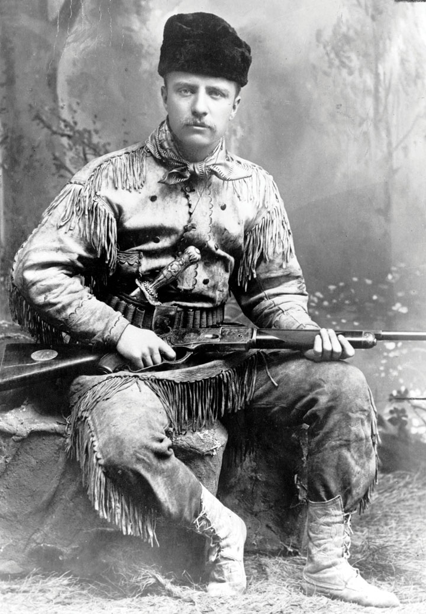This 1885 photo of Teddy Roosevelt demonstrates both his rugged grit as a rancher in the Dakotas and the wealth that permitted him to pursue a variety of careers. The ornate silver knife Roosevelt is carrying was made for his family by the New York jeweler Tiffany & Company. Despite his affluence and connections, Roosevelt earned the respect of his fellow ranchers in the Dakotas.
With the popular Roosevelt by his side, McKinley once again faced the Democratic candidate William Jennings Bryan in 1900. Bryan attempted to revive the issue of free silver in this campaign. However, the recent economic recovery greatly reduced the perceived relevance of Bryan’s economic ideas. Bryan also ran as an antiwar candidate, a position that appealed to many Americans who were beginning to view the war in the Philippines with suspicion. However, Bryan’s anti-imperialist message failed to overcome the belief that McKinley’s probusiness policies and overseas acquisitions were promoting the growth of US industry and commerce. With slogans such as “Four More Years of the Full Dinner Pail,” the McKinley-Roosevelt ticket prevailed in a close election.
McKinley died only six months into his second term after an assassin shot the president during the 1901 Pan-American exposition in Buffalo. Roosevelt was informed of his pending ascension to the White House while he was on a mountain-climbing expedition. He was soon sworn into office and served as president for the remainder of McKinley’s term. Roosevelt also won the election in his own right in 1904. During his seven-and-a-half years as president, Roosevelt’s personality and exploits dominated the news as much as his policies. For example, he invited professional boxers to spar with him in the White House—leading to an injury that left him blind in one eye. Roosevelt even rode one hundred miles on horseback in a single day—a feat many considered impossible. His love of the outdoors was legendary and helped to inspire a number of measures designed to preserve areas for sportsmen and the expansion of the national park system.
While in office, Roosevelt rejected the idea that the president should defer to Congress. “It is the duty of the president to act upon the theory that his is the steward of the people,” Roosevelt remarked, adding that he believed the president “has the legal right to do whatever the needs of the people demand, unless the Constitution or the laws explicitly forbid him to do it.” As president, Roosevelt introduced many of the reform measures sought by the Progressives, and in so doing, created a larger and more active federal government.
During his successful reelection campaign in 1904, Roosevelt promised that he would not seek a second term in 1908. He kept that promise and retired temporarily from public life, only to seek the nomination of the Republican Party in 1912. When the Republicans chose the incumbent William Howard Taft as their candidate, Roosevelt decided to run as the candidate of the Progressive Party. Although many states at this time had various independent third parties that used the term Progressive in their name, Roosevelt’s decision to run under a national Progressive Party banner in 1912 helped to forge a measure of unity among these various local parties. Like the Populists, however, the Progressive Party would prove short lived, but many of their ideas were incorporated into the platforms and policies of the Republicans and Democrats.
By the early 1900s, the largest 1 percent of corporations produced nearly half of the nation’s manufactured goods. Roosevelt and the Progressives believed that industry and finance were ruled by an oligopolya situation when a particular industry is dominated by a small number of powerful firms. In contrast, a monopoly exists when only one firm controls an industry.—a system where a small number of individuals exercise almost complete control. In defense of their perspective, nearly all of the nation’s railroads were managed by one of six firms. Half of these companies were controlled by the investment bank led by J. P. Morgan. Standard Oil controlled nearly 90 percent of the nation’s domestic oil refineries. Trusts controlled most other major industries, while a series of mergers and acquisitions meant that retailers were increasingly affiliated with national chains. Many Americans were concerned by the consolidation of power by these corporations. At the same time, they recognized that most of these corporations had succeeded by engineering more efficient methods than the patchwork of local firms they had replaced. Still, the Progressives believed that too much consolidation in any industry discouraged innovation and invited unfair practices.
Progressive reformers were generally middle-class women and men who had prospered during the second Industrial Revolution. As a result, they sought to reform capitalism rather than incite revolution. Progressive efforts at economic reform were directed at promoting efficiency and stability. The Progressives were deeply concerned by the kinds of class conflict that were erupting in other industrial nations during this time and hoped that governmental regulation of industry and labor might prevent the growth of radical doctrines such as SocialismBecause Socialism can refer to a philosophy, a political movement, and an economic and a political system, there are numerous variants of the definition of Socialism. In general, Socialism is a system where productive property such as farms and factories are collectively held and administrated. in the United States. At the same time, the Progressives believed that failure to regulate industry would result in a system that favored productivity over sustainability and economy over wages and workplace safety. If wages for workers were too low, the Progressives pointed out, workers would be much more likely to launch strikes and adhere to radical doctrines. As a result, the Progressives had a different perspective than unions. They favored many of the same policies, but did so out of concern for sustained economic growth and stability. For the Progressives, the growing popularity of Socialism overseas and in the United States was a symptom of the government’s laissez-faire policies. If government would intervene to prevent the growth of monopolies and mediate labor conflicts, the Progressives argued, the Capitalist system would provide both efficiency and fairness.
Figure 4.2
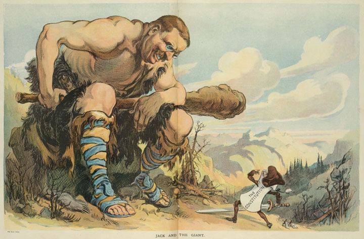Although he was a popular president, many satirized Roosevelt’s domineering tendencies. This cartoon depicts Roosevelt as a giant carrying a “big stick,” which he was fond of referring to, and peering down at a diminutive figure labeled “the Constitution.”
Socialists did not believe that the reforms the Progressives favored would be enough. They argued that Capitalism inherently led to exploitation of workers. The only solution, Socialists believed, was for government to seize control of the means of production (factories, mines, farmland, etc.) and run each of these enterprises in the public interest. From the perspective of middle-class Progressives, Socialism was the antithesis of freedom because it eliminated private property. Progressives believed the role of government was to protect private property and nurture the profit motive that inspired hard work and innovation. However, many workers lacked basic necessities and felt they had little chance to acquire any material security under the present system. For those who believed they were being exploited, and for those who contrasted their poverty with the wealth of the leading capitalists, the idea of equally dividing the nation’s wealth and permitting the government to run factories and farms held some appeal.
Progressives recognized the limitations of free market, even if they did not fully appreciate these shortcomings from the perspective of the poor. By enlarging the power and scope of government, the Progressives believed that they could regulate corporate America in a way that would ensure fair competition between businesses and fair conditions for workers. However, some Americans believed that the kinds of government intervention the Progressives sought might inadvertently become the first steps towards Socialism. By creating a powerful central government that had the power to regulate the private sector, they argued, the Progressives might unwittingly be creating a government that might eventually grant itself the power to seize control of businesses and other forms of private property. If the federal government ever became this powerful, opponents of Progressivism feared, political leaders might eventually rise to power by advocating class warfare and the seizure and redistribution of the nation’s wealth.
A small number of business leaders viewed Progressive reform as a compromise between Socialism and pure Capitalism. They believed some government regulation was necessary to make the free market operate correctly. They also believed the possibility of government intervention might help mitigate the demands of workers and prevent the popular uprisings that occasionally swept Europe. These business leaders pointed out that the kinds of changes the Progressives supported were usually mild reforms that reflected the shared interests between workers, management, and the public.
The government’s actions in negotiating a settlement between 100,000 striking coal miners and management during the 1902 Anthracite Coal StrikeA strike that began in the coal mines of eastern Pennsylvania that was resolved by federal arbitration. The miners received a modest pay increase but failed in their efforts to bar nonunion labor from the mines. provides an example of this kind of compromise and reform. Miners throughout Pennsylvania demanded a 20 percent raise and provisions forbidding nonunion workers from being employed within the mines. Management refused to consider these demands and argued that permitting a union-only workforce would effectively grant workers control over whom they could hire. As both sides prepared for a long strike, the rest of the nation faced the prospect of a winter without coal. Roosevelt and other Progressive leaders proposed that both sides agree to arbitration by experts in the field of coal mining. The coal unions agreed to this arbitration. Eventually, the government compelled the coal operators to agree as well. Workers’ demands that only union workers could be employed in the mines were rejected, but they did receive a 10 percent raise and reforms designed to increase safety and welfare on the job.
Although he was able to promote a compromise, some aspects of Roosevelt’s response to the coal strike angered conservatives and business owners. For example, the president threatened to use the military to seize and administer the mines if a solution could not be reached. Roosevelt’s intervention demonstrated a new philosophy of federal activism in response to a strike that threatened the public welfare. Rather than sending the military to break up the strike, the military would be used to operate the mines while the government acted as mediator. If mediation failed, both labor and management would suffer. From the perspective of conservative opponents of Progressivism, Roosevelt’s threatened seizure of privately owned mines indicated that the government had grown too powerful. The unions countered that the only reason such methods were even contemplated was because management refused to consider the reasonable requests of workers. From the perspective of the Progressives, the 1902 strike demonstrated that a few coal operators had become too powerful and government regulation was necessary to prevent future conflicts from ever reaching the point of a nationwide strike.
Figure 4.3
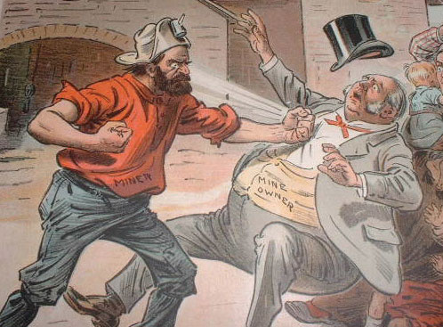The 1902 Anthracite Coal Strike in Pennsylvania resulted in a ten percent raise and other demands. The victory would prove short-lived as coal companies simply changed the rates they charged miners who were dependent upon supplies and housing controlled by the company.
Given the political upheaval in other developing nations and the past history of violent strikes in the United States, some business leaders were willing to accept a more active government at the turn of the century. Some believed the government might promote stability and better relations between labor and management. Corporate growth had not been curtailed by previous government regulations such as the Interstate Commerce Act, Sherman Anti-Trust Act, and various state regulations regarding workplace safety. In fact, some business leaders even argued that the existence of government agencies with limited powers over trade and commerce did more to provide the appearance of government regulation than actual reform. The creation of antitrust laws and small regulatory agencies had appeased reformers during the late nineteenth century, they argued, and might help to absorb public criticism and demands for more substantive reforms.
The Progressives of the twentieth century were not content with the mere appearance of reform, however. They became more insistent on breaking up trusts and creating powerful regulatory agencies as the decade progressed. Roosevelt personified this tendency. He began his administration by agreeing to continue the conservative policies of the late William McKinley. Before long, Roosevelt demonstrated his penchant for greater regulation of corporate America. For example, he ordered the Department of Justice to investigate the Northern Securities Company in 1902. Roosevelt believed that the only purpose of this railroad trust was to create a cartel. Northern Securities was a holding company that controlled three of the largest railroads in the country. The purpose of the company, Roosevelt argued, was to conspire against competitors while not competing against one another. Existing laws and the sentiments of their own shareholders prevented these three companies from simply merging into one giant railroad. Through the creation of Northern Securities Company, however, a single board effectively coordinated operations in ways that reduced competition between the three railroads while strangling many of their smaller competitors. After two years in court, the Supreme Court agreed with Roosevelt and ordered a breakup of the giant trust.
Figure 4.4

Alton Parker swept the South, which was dominated by the Democratic Party by 1904. Roosevelt’s Square Deal and moderate Progressive reforms were supported by the rest of the nation.
During the 1904 election, Roosevelt promised a “Square Deal” that would protect US workers and farmers from monopolies and unscrupulous businesses. The Democratic candidate Alton B. Parker supported many of Roosevelt’s views, especially when it came to the danger of monopolies. However, Parker was far more conservative and opposed the president’s goal of expanding the power of the federal government. Parker believed that the states, rather than the federal government, could best act to protect workers and consumers. As a result, it was difficult for Parker to provide positive examples of what he might do if elected to lead a federal government he believed should defer to the states. Parker and his supporters feared that the expansion of federal power was contrary to the interests of the nation and its traditions of limited government. While many agreed with this message, Roosevelt’s growing enthusiasm for Progressive reforms allowed him to give positive examples of how he might use the government to address issues of concern to voters.
With the exception of Roosevelt’s enthusiasm for overseas expansion—a mainstay of the Republican Party during this era—observers noticed that Roosevelt backed many of the goals that had been associated with the Democrats in recent presidential campaigns. During the 1890s, the Democrats fused with Populists and considered themselves to be the party who defended workers and farmers against the interests of big business. Meanwhile, the Republicans supported more conservative and probusiness policies. Parker’s conservatism and support for the gold standard set him at odds with many in the Democratic Party. In some ways, Roosevelt better fit the ideas of Progressive Western Democrats and former Populists, while Parker embodied many of the ideas of the late William McKinley and conservative Republicans. As a result, it was difficult for Parker to win support among Western and Northern Democrats, and he failed to win even one state beyond the Mason-Dixon Line. Parker swept the Democratic South for two reasons. First, he defended the concept of local control over the federal government. Second, the Republican Party had largely ceased to exist in many Southern communities. In the North and the West, however, voters overwhelmingly supported Roosevelt’s Square Deal and its promise of more rigorous federal regulation.
After winning the presidency on his own in 1904, Roosevelt began to view his office as a “bully pulpit” from which he could enforce his reform agenda. The Roosevelt administration brought lawsuits against several leading trusts, including Standard Oil, the Du Pont Corporation, and the American Tobacco Company. Roosevelt was soon labeled a “trust buster” by some businessmen who opposed him. Ironically, the mood of the country had changed, and this derogatory label backfired by increasing Roosevelt’s popularity among liberal Republicans and Progressives. However, Roosevelt was careful to maintain positive relations with many business leaders, and he continued to receive campaign donations from the usual Republican supporters. Roosevelt also made it clear that he opposed the breaking up of certain “good trusts,” even as he avoided precise definition of which trusts were operating in the public interest. During his two terms in office, Roosevelt initiated only twenty-five lawsuits against corporations he believed had violated the law. Roosevelt preferred working with business leaders and convincing them to agree to certain regulations through the Department of Commerce and Labor, which was created in 1903. The majority of corporations agreed to the relatively mild demands of the commerce department and its growing staff of corporate and legal experts. In this way, Roosevelt’s White House personified the Progressive faith in the ability of experts within government to resolve problems by meeting with labor and business leaders rather than resorting to the courts or strikes to settle differences.
The federal bureaucracy expanded under Roosevelt and the reform-minded culture of the Progressive Era. Roosevelt secured the passage of the Elkins Act, which forbade railroads from offering rebates to its preferred customers. The Roosevelt administration argued that these rebates were a way of charging different prices to different customers without explicitly violating the Interstate Commerce Act. In 1906, Roosevelt and Congress passed the Hepburn ActA 1906 law that granted the Interstate Commerce Commission (ICC) the authority to establish maximum rates that railroads could charge.. This new law expanded the authority of the Interstate Commerce Commission (ICC) which had been created in 1887 to regulate railroads. In the past, the ICC could only investigate complaints of excessive rates and file lawsuits against railroads they believed were in violation of the spirit of fair competition. Under the Hepburn Act, the ICC could actually establish maximum rates that railroads could charge. If a particular railroad believed the ICC’s rates were set too low, it was now their responsibility to file suit and prove their case. As a result, the burden of proof and the hassle of initiating lawsuits now belonged to the railroads rather than the consumer and the ICC. Progressives cheered the Hepburn Act as model legislation providing the kind of vigorous government intervention they hoped would expand to other industries. Conservatives believed the new law concentrated too much power into the hands of federal bureaucrats. Business leaders feared that the new law might lead toward a much larger role for government as a regulator of private industry beyond the railroads.
Figure 4.5

President Theodore Roosevelt with conservationist John Muir overlooking California’s Yosemite Valley in 1903.
The Hepburn Act signaled an end of laissez-faire policies regarding some of the biggest and most powerful companies in the United States, even if the ICC used its new powers cautiously. ICC officials consulted with the rail companies before establishing maximum rates and other regulations to ensure fairness and continued operation of the nation’s infrastructure. Roosevelt also consulted with business leaders in ranching, agriculture, mining, and forestry before drafting laws regarding land use and environmental conservation. Individual states had taken the lead in establishing nature reserves and state parks. Due to the efforts of Sierra Club founder John MuirThe leading conservationist of the early twentieth century, John Muir founded the Sierra Club and documented the importance of preserving California’s Sierra Nevada Mountains. and other conservationists, Congress had also established a number of national parks. Roosevelt was inspired by the efforts of Muir, who hoped to preserve the wilderness for its own sake, even if the President tended to see the purpose of conservation in utilitarian terms.
In many ways, Roosevelt’s conservationism was similar to the perspective of Gifford PinchotLed the US Forestry Service and promoted the notion that government should ensure the sustainability of natural resources. Pinchot also increased the number of protected forests and required lumber companies to plant trees while outlawing the destructive practice of clear-cutting entire forests., chief of the US Forest Service. Pinchot’s goal was to promote the scientific management of government lands to ensure the long-term availability of lumber and other natural resources. Pinchot harnessed the power of the federal government to halt the destruction of forests and required lumber companies to plant trees and follow other regulations. His agency promoted the natural reforestation of areas where trees were harvested and also banned the controversial practice of clear-cutting entire forests. Together, Roosevelt and Pinchot quadrupled the nation’s total forest reserves to enclose 200 acres.
Roosevelt was a sportsman, and this perspective influenced his policies regarding conservation. He viewed the purpose of conservation largely in terms of preserving lands and species for recreation. In order to prevent overhunting, Roosevelt supported the creation of state agencies that regulated hunting through laws and game wardens. Many of these regulations disrupted the traditional ways of Native Americans and other rural dwellers who depended on hunting for food. At the same time, Roosevelt’s creation of fifty wildlife refuges and numerous national parks helped to preserve the wilderness and various species for future generations. Roosevelt also helped to mobilize public support for conservation, leading to the creation of the National Park Service during the Wilson Administration in 1916.
Muir collaborated with Roosevelt and Pinchot, recognizing the delicate status of the Conservationist Movement and his need to work with the federal government to promote his ideas. However, Muir could not abide by Pinchot’s decision to support the construction of a reservoir within Yosemite National Park. The purpose of the Hetch Hetchy Reservoir was to provide water to the city of San Francisco. Opponents countered that the reservoir would be disastrous for the ecology of Central California. Roosevelt demonstrated the limits of his belief in conservation, supporting the reservoir as a question of the needs of humanity versus romantic sentiment about the preservation of a picturesque valley. The Sierra Club and its founder John Muir launched a strenuous campaign in opposition to the reservoir project. They could only delay its passage, and construction was finished in 1923. The controversy split the conservation movement between those who sided with Muir about the need to preserve nature for its own sake and those who agreed with Pinchot about the needs to make nature serve the needs of man.
The American people have evidently made up their minds that our natural resources must be conserved. That is good, but it settles only half the question. For whose benefit shall they be conserved—for the benefit of the many, or for the use and profit of the few?
—Gifford Pinchot, conservationist and first Chief of the US Forest Service
Similar to the ways that aridity had defined the patterns of Western settlement and life following the Civil War, questions regarding water usage defined Western history during the early twentieth century. Nevada senator Francis Newlands introduced the Water Reclamation Act of 1902, a law which was often referred to as the Newlands Reclamation ActOfficially called the Water Reclamation Act of 1902, the Newlands Act established the federal Reclamation Service. This agency sponsored projects such as dams and irrigation systems that distributed water to arid regions of the West.. This law created the Reclamation Service, a federal agency charged with finding ways to spur agricultural and commercial development by distributing water to arid regions of the West. The Newlands Act set aside funds from the sale of federal land for large-scale irrigation projects. For example, the Shoshone Project brought water to the Bighorn Basin of Wyoming, while Arizona’s Theodore Roosevelt Dam near Phoenix permitted urban sprawl in the midst of a desert. Original regulations limited the sale of water from the federal government’s dams and irrigation networks to cities and individual family farms that were no larger than 160 acres. However, these regulations were increasingly modified or ignored as commercial farming and industry began to dominate the West.
Figure 4.6
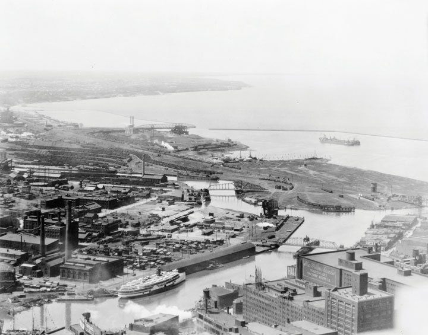This 1920 photo shows the commercial development along the Cuyahoga River in Cleveland. This river would later become synonymous with environmental pollution, but the practice of dumping industrial waste into rivers was common throughout the nation at this time.
The federal government largely neglected the most troubling environmental issue of the West—the long-term challenge of sustaining cities and commercial farms within the arid plains. Likewise, the environmental impact of commercial farming, industrial growth, and mining was not addressed. Coal companies were still permitted to abandon mines, even those that left open pits. Mine operators were also permitted to use hydraulic mining techniques that used millions of gallons to blast earth away from ore. The environmental consequences of these mining techniques were rarely considered in an era where cities and factories used rivers as their own dumping ground for sewage and industrial waste. Throughout the nation, most cities simply ignored the inconvenient truth that those who lived downstream depended on the same river for their drinking water. The Cuyahoga River between Cleveland and Akron became forever associated with environmental disaster when it became so polluted that it caught on fire in 1969. However, conflagrations on the surface of this and other American rivers were actually quite common during the early 1900s. During these years, cities emptied their sewage directly into rivers. Refineries dumped oil and industrial waste with little thought of the long-term consequences. Although the Progressives sought to preserve the pristine environment of the vanishing wilderness, few gave much thought to the modern environmental concerns of air and water pollution.
In a moment of jubilance he would later regret, Roosevelt promised that he would not run for reelection on the evening of his 1904 victory. Despite his desire to seek a second full term, Roosevelt remained true to his word and supported Secretary of War William Howard TaftAn influential judge in Ohio, Taft rose to national prominence after Teddy Roosevelt supported his nomination for president in 1908. Taft served one term and later became the Chief Justice of the Supreme Court. as the Republican nominee in 1908. Roosevelt’s support helped Taft secure the Republican nomination over Wisconsin senator Robert La FolletteA Republican politician from Wisconsin who was deeply influenced by the Progressive Movement of the early 1900s, La Follette enacted a number of reforms as governor of Wisconsin; these laws were aimed at increasing the power of government to regulate corporations.. Ironically, La Follette had been one of the strongest advocates of Progressivism and was the Republican leader who had initiated many of the Progressive reforms credited to Roosevelt. As governor of Wisconsin, La Follette instituted direct primaries for all major political offices. He also supported a method called “recall” where citizens could remove public officials. La Follette and other Progressives also supported methods of direct democracy, such as initiative and referendum, where citizens could introduce laws through petitions and special elections.
Progressives within the Republican Party favored La Follette over Taft. However, La Follette was labeled by some conservative Republicans as a radical who supported Socialism. Although he worked with the leaders of the growing Socialist Party in Wisconsin, La Follette strenuously and vocally opposed Socialism. He believed the key to preventing the kind of worker’s rebellion the Socialists were trying to foment was to reform the Capitalist system to be more responsive to the public interest and human rights. This idea was soon known as “the Wisconsin idea,” due to La Follette’s efforts in his home state. La Follette passed stricter regulations regarding worker safety and child labor. La Follette also favored stronger state welfare programs for women and children, as well as government-mandated pensions for workers. Although he would receive nearly 5 million votes as an independent candidate in 1924, many conservatives within the Republican Party viewed La Follette with suspicion and chose to support Taft in 1908.
Figure 4.7

A political cartoon lampooning Bryan’s attempts to revive support for ideas such as free silver. Among Bryan’s supporters is an aged man beating a drum labeled “dead issues.” Following his third defeat in 1908, Bryan moved away from the national spotlight. He would make one final major public appearance during the 1920s debate regarding public education, religion, and the theory of evolution.
For the third and final time in 1908, the Democrats selected William Jennings Bryan as their candidate. Once again, the political atmosphere of the early 1900s gave Bryan little room to maneuver and differentiate himself as the defender of the common man. Taft benefitted from his association with Roosevelt, who was hailed as a reformer. Equally important, the Republicans retained the support of corporations as well as many laborers and farmers. Many voters found it difficult to differentiate between the platforms of Bryan and Taft. The Democratic candidate espoused many of the same policies and ideas of the past seven-and-a-half years under Roosevelt—policies the voters believed Taft would continue.
Taft had widespread experience as a public figure through a series of political appointments and diplomatic posts. However, he had never run for political office before his nomination for president in 1908. It mattered little, as Taft’s advisors framed the terms of the campaign in ways that likened their candidate to the popular Teddy Roosevelt. Fairly or not, Bryan was portrayed as a perennial second-place candidate, while Taft was presented as the next Roosevelt. For some, Bryan’s recent conversion to Progressivism seemed opportunistic. In reality, Bryan may have been more committed to Progressive reform than nearly every Republican except Robert La Follette and a few other Republicans of Yankee conviction who simply could not bear the thought of being a Democrat. Bryan craved the opportunity to enforce antitrust legislation nearly as much as he longed to be president. His campaign called for tougher regulation of Wall Street and federal insurance for bank deposits—two reforms that might have addressed some of the problems that led to the Great Depression. In the end, neither of these reforms occurred, at least not until after the financial panic of 1929.
Taft’s victory did not lead to an end to Progressivism. The new president surprised many Republican Party insiders by pursuing antitrust legislation even more vigorously than Roosevelt. Taft made few distinctions regarding the “good” trusts his predecessor had tolerated and trusts that acted in restraint of trade. For example, Roosevelt had defended trusts operated by businessmen like J. P. Morgan, citing several times when the investment banker purchased securities during stock market panics that helped calm other investors. Taft disagreed, taking on companies controlled by the House of Morgan and other “good trusts.”
Figure 4.8
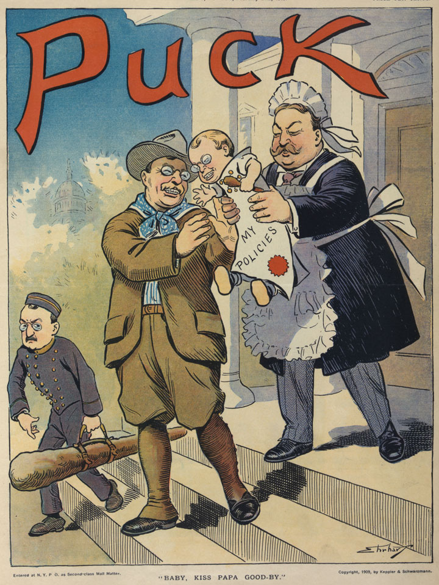An image depicting Taft as a nurse caring for Roosevelt’s policies, which are being handed by the outgoing president to his hand-picked successor. In reality, Taft was much more aggressive in antitrust legislation but did not share his predecessor’s enthusiasm for politics.
Despite these antitrust lawsuits, Taft generally sided with the conservatives of his party when it came to legislation. Only occasionally did the president side with the Progressive wing of the Republican Party, which was led by La Follete in the Senate and the long-serving Nebraska congressman George Norris in the House. Even then, Taft had little appetite for Congressional politics. For example, the president supported an effort to lower tariffs on manufactured goods—a measure that was opposed by many Northern Republicans. By the time the president’s bill made it through Congress, Senators who represented manufacturing interests had added hundreds of amendments that kept tariffs quite high in nearly every industry. Progressive Republicans urged their president to veto the bill as a matter of principle, but Taft had no stomach for power politics and went along with the conservative leadership of his party.
As the tariff bill demonstrates, many of Taft’s attempts to reform the political system ended in failure because the president refused to go against the conservative majority of his own party. A scandal involving a questionable deal arranged by the secretary of the Interior further reduced the image of the Taft administration. Secretary Richard Ballinger leased federal land in Alaska Territory to men he had once represented as an attorney in Seattle. These men sought to develop coal mines in the Alaska frontier. As head of the Forestry Service, Gifford Pinchot hoped to prevent this from occurring. When his efforts to block the deal failed, Pinchot went behind the president’s back and published a number of accusations. The public and Congress took notice, but an investigation revealed no obvious indication of wrongdoing.
It appeared to many that Pinchot had sought to generate a scandal in order to scuttle the Alaska land deal, and Taft felt he had little choice but to fire Pinchot for insubordination. This action greatly diminished the president’s record as a conservationist while the impression of scandal and disloyalty created a negative impression of the Taft administration. Although Roosevelt would be remembered as the environmental president of the early twentieth century, Taft placed more land under federal protection in his one term as president than Roosevelt. He also secured legislation that granted the president the authority to block federal land sales. However, Taft would be forever remembered as the man who fired Gifford Pinchot and permitted energy companies to exploit the Alaskan frontier. Roosevelt would also be known as the leading Progressive, despite the fact that Taft signed more Progressive reforms into law. However, most of these reforms were the result of legislation that had reached Congress after years of grassroots campaigns led by local Progressives. Taft supported but did not initiate these Progressive reforms.
Having agreed to a tentative peace agreement in the Philippines in 1902, the military government that had ruled the island transitioned into one that promised eventual Filipino independence and limited self-government. The Filipinos and the residents of Guam, Puerto Rico, and the American Samoa pressed for greater independence. They also challenged the idea that the people who lived in what became US territories should not be granted the rights of US citizens. In a series of important court decisions known together as the Insular CasesRefers to a number of US Supreme Court cases that were decided in 1901 and dealt with the rights of inhabitants of the islands the United States controlled after the Spanish-American War. The Supreme Court declared that the Constitution did not apply to territories, nor did its protections extend to the residents of the colonies., federal judges disagreed with their perspective. The Court ruled that the Constitution did not “follow the flag.” In other words, the Constitution did not automatically apply to territories, and its protections did not extend to colonized peoples.
As the leading defender of the growing US empire, Senator Albert Beveridge of Indiana supported the Court’s decision. The Constitution “applies only to people capable of self-government,” Beveridge explained. Beveridge candidly pointed out that nonwhites in the United States were explicitly or implicitly denied the right of citizenship and self-government and asked why Filipinos and Puerto Ricans should be an exception. African Americans in the South faced disfranchisement and segregation, he reminded his audience, while Native Americans living on reservations and most Asian immigrants were explicitly denied citizenship and the right to vote. If the Progressives were so concerned about the rights of Pacific Islanders and those in the Caribbean, Beveridge asked, why were they usually so reluctant to discuss the condition of minorities within the United States?
Beveridge might have pressed this point further had he not also supported the nativist impulse shared by many Americans. Conceptions of race and the “exotic” among white Americans facilitated the nation’s acceptance that nonwhite people in the United States and abroad were simply “different” from them. Attitudes ranging from paternalism to the most virulent forms of racism softened the mercenary aims of land speculators and imperialists by presenting native peoples as the natural losers of a Darwinian contest between civilization and savagery. Paternalists spoke of their desire to uplift the “savage” Indian and Filipino in ways that presented conquest as the first step in assimilation. Others equated native populations to jungle animals whose lives meant little in comparison with more evolved beings such as themselves. Even paternalists such as Theodore Roosevelt, who believed indigenous populations shared a certain exotic vitality, were eager to make more land available for white settlement and provide the United States with the benefits of empire.
While many supporters of the anti-imperialist movement opposed colonization on moral grounds, these liberals were outnumbered by racial conservatives who were motivated by fears of increasing the diversity of the US population. One of the leading concerns of these individuals was that the extension of citizenship rights would permit the migration of Filipinos and Puerto Ricans to the United States. South Carolina senator Ben Tillman was one of the most outspoken racial conservatives in America. He blamed the existence of a black majority on the problems the South faced. From Tillman’s perspective, his mission was to warn naive white Progressives who did not fully understand the danger posed by nonwhite migration. Nonwhite Americans countered Tillman’s message and presented a different perspective. For example, the author of a letter published in The Broad Axe, an African American newspaper published in Salt Lake City, asked why Americans “send tracts and bibles to Africa and India to Christianize the heathen” only to “then…send cannon and dynamite so that the poor native wretches may be blown into eternity if they attempt to defend their homes.” “Let us live up to our Constitution and laws and set an example for other nations which we claim are inferior to us,” the author concluded.
As this letter indicates, the first years of America’s overseas empire saw renewed efforts at missionary work. They also featured racism, intolerance, and even violence against those who opposed the presence of US forces. The majority of fatalities on both sides were due to diseases such as yellow fever. Because whites assumed African Americans were immune to the “jungle” diseases of the Philippines, a high proportion of black troops were stationed overseas and died in larger numbers and percentages than other soldiers. The army’s medical service, led by Dr. Walter Reed, eventually pioneered ways of preventing the spread of yellow fever. Within a few years, these methods and vaccines were applied to the civilian population. Numerous US-based charitable associations provided medical supplies, while some Filipino businesses profited from trade. In this way at least, there were some tangible benefits to being part of the American empire.
Figure 4.9
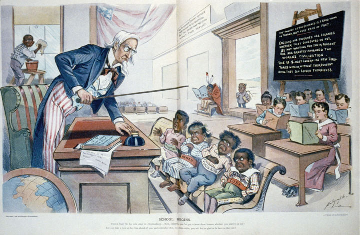This 1899 cartoon depicts Cuba, Puerto Rico, Hawaii, and the Philippines as unruly children who must be compelled to learn their lessons in civilization before they can join the rest of the class. In the corner sits a Native American “dunce” whose book is upside-down, and an African American child must clean the school’s windows rather than participate.
The acquisition of the Philippines was intended to open Asian markets to US commerce. China was a declining empire that had been defeated by the rising world power of Japan in the 1890s. However, China remained one of the largest and most important markets. Throughout world history, access to East Asian markets defined the commercial success of Middle Eastern and European empires. China’s demonstrated inability to keep foreign traders out of their nation at the turn of the century led to a full scramble among European powers to acquire “spheres of influence” by occupying Chinese ports.
Secretary of State John Hay proposed that each European nation and the United States agree to not restrict one another from trade within these spheres. However, the United States had no ability to enforce such an agreement, and the idea was largely ignored until a nationalist uprising within China sought to remove all foreign influence by force. A group known as the Fists of Righteous Harmony (called the “Boxers” in the United States and Britain) captured the foreign embassies in Beijing (then known as Peking). An international coalition made up of Japanese, Russian, British, German, and US forces soon put down the Boxer RebellionAn uprising that erupted in the summer of 1900 and was centered around Beijing. The “Boxers” feared that their society had been corrupted by the West and protested against their own government’s inability or unwillingness to keep Western traders and culture out of China. in the summer of 1900. The Boxers had risen up as part of a popular uprising against the failure of their government to keep opium traders and other foreign profiteers out of the nation. Failing to spur a revival of traditional Chinese ways and eliminate foreign influence, the defeat of the Boxers permitted the spread of trade and Western ideas throughout East Asia.
While Americans sought to maintain trade with Japan and compete with Europeans for access to Chinese markets, they expected to maintain a near-monopoly of trade in the Caribbean and Latin America. President Roosevelt offered his own interpretation of the Monroe Doctrine that would be known as the Roosevelt CorollaryExpressed by President Roosevelt in 1904, this statement of American foreign policy declared that the United States would intervene in the affairs of independent nations throughout the Western Hemisphere whenever US officials believed those nations needed assistance. As a result, the United States expected European nations with concerns in the Western Hemisphere to work through US officials.. The Monroe Doctrine had been issued in 1823 and declared that the United States would guarantee the independence of nations in the Western Hemisphere. In 1904, Roosevelt offered his interpretation of the Monroe Doctrine in which he declared that the United States must intervene in the affairs of independent nations throughout the Western Hemisphere whenever US officials believed those nations needed assistance. If one of these nations was experiencing financial instability or political turmoil, for example, Roosevelt believed that assistance from “some civilized nation” was required. Latin Americans protested that the Roosevelt Corollary was nothing more than a fabricated justification of American imperialism. The wording of the president’s decree demonstrates the delicacy of the issue, stating that the United States would intervene “however reluctantly…to exercise international police power.” In many instances, that police power was used to protect US companies or compel repayment of loans made by European and US banks.
Intervention in Latin America could also be motivated by strategic concerns. The narrow isthmus of Panama was the northernmost region of the nation of Columbia. Prior to 1903, the United States had opposed at least two attempts by Panamanians who sought to declare independence and form their own nation. In 1903, however, Roosevelt sent warships and marines to protect a group of Panamanians who sought independence. The change was motivated by America’s desire to build a canal across Panama and the reluctance of Colombian officials to approve the venture.
Politicians in Colombia sought a payment of $25 million before the United States could begin construction of the Panama Canal. In response, Roosevelt made a secret deal to offer military aid to the Panamanians. In exchange for the rights to build the canal, the United States provided military aid to help ensure that Panama’s revolution succeeded. A relatively small force of Panamanians would have likely been crushed by the Colombian army had it not been for US aid. When the revolution began, Colombia could not send troops by sea because US warships blocked the ports. A US company controlled the only railroad in the region and permitted the Colombian officers to board the northern-bound trains. US forces then arrested the officers upon their arrival in Panama, and the train did not return for the rest of the troops as promised. With this assistance, Panama secured its independence.
Colombia protested and eventually received payment of $25 million for damages suffered due to US intervention in what Colombians believed was a civil war. In addition, the United States also had to compensate Panama for the right to construct and operate the canal in its country. Finally, the United States were also forced to provide partial compensation for a French construction company that had begun work on the canal in the 1880s. In short, Roosevelt’s duplicity reduced US prestige in Latin America and cost the United States millions more than would have been necessary had he dealt honestly with Colombia. “I took Panama,” the president would later brag. His bravado proved costly in terms of lives and money, and prevented the consideration of other alternatives. For example, building a canal across Nicaragua provided a less politically volatile alternative. Although Nicaragua is much wider than Panama, construction teams could have utilized flatter land and several natural lakes to build a longer but less expensive canal.
Instead, Roosevelt secured the land rights to a ten-mile “canal zone” and began the construction of the Panama CanalA canal completed in 1914 that links the Atlantic and Pacific Oceans through a fifty-mile canal across the nation of Panama.. The same French company that had built the Suez Canal had spent $200 million and lost 10,000 to 20,000 lives to starvation and disease in a failed attempt to build the canal over a dozen years. US engineers completed the task in less than ten years, but another 5,000 construction workers perished. Once completed, the Panama Canal ranked as one of the most important feats of engineering in world history. Like the Suez Canal, which permitted ships to navigate between Europe and Asia without traveling around Africa, the Panama Canal permitted ships to avoid the journey around South America. Its completion occurred less than a month after the outbreak of World War I and permitted US warships and cargo traveling from one coast to the other to avoid the extra 8,000 mile journey and dangerous waters around Cape Horn.
President Taft believed that investing money in the Caribbean and South America would help to heal the strained relations between the United States and these nations. He called this philosophy “Dollar DiplomacyAn expression of President Taft’s foreign policy regarding Latin America that sought to replace military deployments with efforts to promote economic development. Taft hoped American investments in Latin America would promote stability and improve diplomatic relations between the United States and Latin America..” The president argued that US investment and management expertise would produce stability and prosperity throughout Latin America. However, US investors usually did little more than purchase existing businesses and plantations, which did little to promote job growth. Equally important, profits from these businesses would now flow to the United States and other foreign investors, leaving Latin America more impoverished and unstable than before.
The Roosevelt Corollary was often cited in justification of US military intervention throughout the region. For example, Taft sent the Marines to Nicaragua in response to political turmoil that threatened US investments in 1912. These troops would occupy Nicaragua almost continuously until they were removed in 1933. Similar political and financial instability threatened US business interests in Haiti, the Dominican, and Cuba between the early 1900s and the 1930s and led to additional deployments of US troops. In several cases, the potential failure of foreign investors to repay American loans convinced US officials to station troops within Latin American customs houses. In these instances, tax revenues from tariffs were redirected to American and European banks that managed the loans. From the US perspective, such measures were necessary to ensure repayment. From the perspective of Latin America, the Roosevelt Corollary was little more than a veil to mask economic imperialism. Puerto Ricans demanded independence, but they were instead granted US citizenship in 1917. This helped provide reform on this island, although Puerto Ricans and others could do little to ensure that US companies paid their fair share of local taxes or promoted businesses that aided the local economy.
Figure 4.10
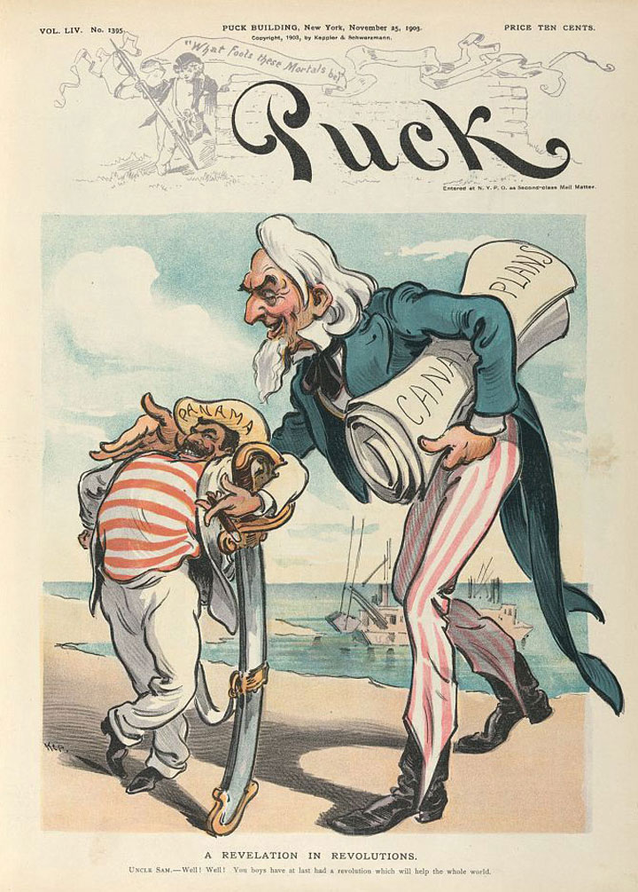This contemporary cartoon plainly indicates its belief that Roosevelt and the federal government backed the Panamanian Revolution in exchange for the right to build a canal across Panama. Most Americans at the turn of the century understood their government’s role and supported their president’s actions regarding Panama.
Roosevelt’s retirement from politics ended as soon as the former president returned from an African safari in 1909. The following year, the former president delivered a high-profile political speech in which he gave his support to a number of progressive Republican candidates in the upcoming congressional election. By the spring of 1912, Roosevelt openly criticized Taft, and few were surprised when he announced his intention to run for president once again. Still popular among many Republicans, Roosevelt’s decision to seek the Republican nomination threatened to split an already divided party.
Many wealthy Republicans viewed Teddy Roosevelt as a traitor to his class, especially after a speech in which the former president proclaimed a doctrine he called the New NationalismA political doctrine expressed by Teddy Roosevelt in 1910 that demonstrated his acceptance of Progressive ideas. New Nationalism sought the creation of a more powerful federal government that would regulate corporations and the economy in the public interest.. Roosevelt’s speech occurred during a 1910 ceremony that dedicated a statue in Osawatomie, Kansas, to the memory of John Brown. Although the former president honored John Brown, he chose to not mention Brown’s raid on a West Virginia armory or Brown’s controversial plan to liberate slaves. Instead, Roosevelt’s focused on contemporary politics, arguing that property should be regulated in the public interest. Roosevelt emphasized the importance of protecting personal property and maintaining the profit incentive of free enterprise. However, he believed that these principles should be considered within the larger context of public interest and human welfare. Roosevelt’s philosophy of New Nationalism permitted many Progressives to see Roosevelt as a supporter of their own causes, which were dependent on a strong and activist federal government. It also led conservative Republicans to forget their previous reservations about their current president and rally behind the banner of William Howard Taft.
Presidential nominations were still dominated by leading members of a particular party at this time. As a result, influential members of the Republican Party, who tended to be more conservative, enjoyed tremendous leverage over the rank-and-file membership of their party. Only a handful of states had transferred the authority to select nominees from party leaders to party members through primary elections. Roosevelt’s victory in the Ohio primary (Taft’s home state) demonstrated the likelihood that Roosevelt would fare much better in the 1912 general election. Roosevelt also won nine of the twelve other Republican state primaries. However, Roosevelt had alienated many leading members of the Republican Party, and Taft enjoyed the advantage of being the incumbent. When the Republican delegates met and held their nominating convention, party leaders quickly decided to nominate Taft before many of the delegates from states that had voted for Roosevelt were able to participate. Roosevelt’s supporters were indignant and promised to back Roosevelt if he ran as an independent. Far from ending the Progressive challenge within their ranks, the Republicans widened the divisions within their party and alienated their own members in the states that had adopted the primary system.
Although Taft would be the Republican nominee, Roosevelt decided to run as the candidate of the Progressive PartyAlso known as the “Bull Moose Party” in response to an expression by its leader, Teddy Roosevelt, the Progressive Party was a short-lived third party movement that supported Roosevelt’s presidential campaign in the 1912 election. and resume his bid for the presidency. Suggesting a more prominent role for women within the newly launched Progressive Party, Jane Addams was given the honorary position of seconding Roosevelt’s nomination. However, the Progressive Party had few early supporters beyond Roosevelt and his political allies. Even fewer believed the new organization could prevail against the two major parties. A reporter covering the convention asked Roosevelt for his thoughts on the matter. The ever-enthusiastic Roosevelt laughed off the sparse number of supporters attending the convention and claimed that he felt “as strong as a bull moose.” The nickname stuck, and the Progressives were soon known as the Bull Moose Party.
Figure 4.11

The cover for Teddy Roosevelt’s 1912 campaign song. Roosevelt’s Progressives were known as the “Bull Moose Party.” Supporters utilized the “masculine” image of the bull moose (a nickname for a male moose) in contrast to the less-robust animal mascots of their rivals.
Roosevelt’s campaign featured a mixture of his doctrine of New Nationalism and Progressive ideas about how to improve government and the economy. Roosevelt endorsed women’s suffrage, an insurance system for injured workers and the unemployed, federal welfare programs for women and children, higher taxes for the wealthy, and more rigorous government regulation of corporations. As a result, Teddy Roosevelt had redefined his political orientation. As president, he had been a liberal Republican who generally sided with conservative interests. As leader of his Bull Moose Party, however, Roosevelt had moved significantly toward the political left.
Labor leader Eugene Debs also reinvented himself, running as the Socialist Party candidate for president in 1912. The journey of Eugene Debs from labor activism to Socialism occurred while he was serving a prison sentence for his support of a nationwide strike on behalf of rail workers. Debs polled 900,000 votes representing 6 percent of the popular vote. Debs and other Socialists believed that their message equating public ownership of property with democracy was gaining strength, and they were optimistic about the future of Socialism in the United States following the election. However, world events and the growing conservatism of US culture and politics meant that the election of 1912 would represent the high-water mark of the Socialist Party in US presidential politics. The existence of Deb’s campaign may have taken some votes away from Roosevelt. However, the very existence of an organized Socialist party made it harder for the opponents of the Progressives to present Roosevelt and other Progressive candidates as radicals.
The Democrats nominated a newcomer to the political scene: New Jersey governor and former history professor Woodrow WilsonA historian and college administrator who became governor of New Jersey in 1910, Wilson entered national politics and was nominated for president by the Democrats in 1912. As president, Wilson supported a number of Progressive issues demonstrating the bipartisan support for Progressive ideals at this time.. Wilson had spent most of his time in academia and had not run for any public office until winning the governorship of New Jersey in 1910. The former Princeton administrator backed many of the ideas of the Progressives and had instituted a number of popular reforms as governor, such as regulating public utilities and a workers’ compensation law. Wilson also called for breaking up trusts and restoring the competition of small and local businesses. As a result, many powerful interests within the state of New Jersey and the Democratic Party opposed Wilson and his ideas. In fact, many within Princeton had also opposed their former president because of his attempts to change the way their school had operated in the past. These conservatives would be much more supportive of Wilson after he secured the presidency. While in the White House, Wilson remained supportive of Progressive reforms at the state level, but he believed that the federal government should not interfere. While he supported strong labor laws for New Jersey, he believed that attempting to institute the same measures nationwide would violate principles of local control and risk creating an overly “meddlesome” federal government.
Most Progressives had been Republicans prior to 1912. However, Democrats in the South and certain areas of the rest of the nation increasingly supported a number of Progressive reforms. By 1912, leading Democratic politicians such as Woodrow Wilson had adopted many of the Progressives’ ideas as their own. Reflecting the division that led to the re-nomination of Taft, few prominent Republican leaders at the state or national level joined the Progressive Party. The former president’s own son-in-law even decided to support Taft because he feared that any defection from the Republican fold would destroy his budding political career. However, millions of rank-and-file members of the Republican Party supported Roosevelt, who outpolled Taft by over half a million votes.
It is only once in a generation that a people can be lifted above material things. That is why conservative government is in the saddle two-thirds of the time.
—Woodrow Wilson
The divisions between Republican supporters of Taft and Roosevelt were sometimes distasteful. Taft issued an indictment of the former president as egotistical and dangerously radical. Roosevelt responded by presenting Taft as the embodiment of political corruption. At one of the low points of the election, both sides engaged in name calling. Roosevelt won this race to the bottom by calling his former secretary of war a “fathead” whose brain was less developed than that of a guinea pig. The comment did little to enhance Roosevelt’s standing, as Taft weighed nearly 300 pounds but was regarded as a kind and honest man. It was a rare low for Roosevelt, who was also well regarded. More characteristic of the Bull Moose leader was his delivery of a rousing speech just moments after being shot in the chest by a would-be assassin. Roosevelt could not use his notes on this occasion, as they were covered in his blood, although they may have saved his life. The bullet passed through the metal case Roosevelt used to hold his trademark round glasses and was nearly stopped by the speech, which had been folded over many times and was nearly as thick as a small book.
Local political meetings were even more volatile, fueled by the whiskey that flowed during such events, regardless of Prohibition laws. Suffragists representing the votes of women argued that the low state of US politics demanded the moral influence of the fairer sex. In seven Western states, women did more than protest their exclusion from politics—they cast ballots and even won election to a number of local and state offices. Despite predictions that women would be easily misled or overly sentimental, the votes of women in these states were usually spread evenly between the candidates in ways that mirrored the overall vote in their communities. Women and men in Utah supported the conservative Taft in equal numbers, while women in more liberal areas of the West were part of the majority that cast their ballots for Roosevelt.
Progressive and Socialist candidates both spoke in favor of immediate federal legislation extending the vote regardless of gender. Democrat Woodrow Wilson was evasive on the subject, at least as a candidate in 1912. His supporters in states where women could vote tended to overstate Wilson’s support for female suffrage, while the image of the Democratic candidate was more conservative on the subject in other states. The same was true of Taft. Despite the evasiveness of the Republican and Democratic candidates, the 1912 election saw growing support for women’s suffrage. As more and more women secured their right to vote, it became politically dangerous to oppose women’s suffrage. Most politicians recognized that even in areas where women could not vote, opposition to equal suffrage would be a poor long-term strategy as the national suffrage movement gained momentum. Once the goal of a constitutional amendment extending suffrage to all women was realized, hundreds of thousands of women would be casting ballots in every congressional district. These voters would remember the men who had opposed their rights in the past.
Figure 4.12
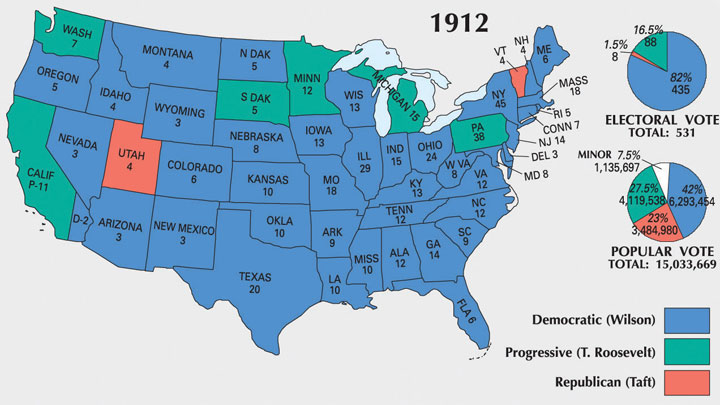This map shows the results of the 1912 election. Wilson’s use of popular Progressive campaign issues and the division of Republicans between Taft and Roosevelt helped assure a Democratic victory.
The Democrats benefitted from the defection of Roosevelt from the Republican to the Progressive Party. “Don’t interfere when your enemy is destroying himself,” Wilson exclaimed as both Taft and Roosevelt competed for Republican support. Wilson received only 42 percent of the popular vote. However, because of the unique system of American presidential elections Wilson appeared to win a landslide victory in the electoral college. Wilson won nearly every state beyond the Great Lakes region, which rallied behind the Progressives. The Democrats also took control of the Senate and added to their numbers in the House of Representatives. After the election, most people who had supported the Progressive Party returned to the Republicans. A number of Progressives were elected at the state and local level, and Progressive ideas had a tremendous influence on President Wilson. However, the Progressives as a political organization quickly faded away, much like the Populists following the election of 1896. Roosevelt remained a leading national figure, while Taft would later be appointed to the Supreme Court where he served as Chief Justice. Given Taft’s aversion to elections and politics, he found his new role in the judiciary more suitable to his tastes.
By the turn of the century, every American town with more than a few hundred residents had its own newspaper. A city of 50,000 might have a dozen different newspapers, many of which were owned and operated by recent immigrants and were published in German, Yiddish, Italian, or Greek. There were also newspapers that sought to represent the views of labor unions, African Americans, and various political parties and movements. Nearly every town with at least a few thousand residents had two leading newspapers that were usually directly subsidized by the Republican and Democratic Parties. In addition, many of the leading and nationally circulated newspapers were dominated by a handful of powerful newspaper syndicates. Local papers usually reprinted articles written by these syndicates, which were then distributed through the “wire.” However, the desire to keep and attract subscribers meant that local newspapers were usually willing to publish a variety of viewpoints. In both cases, articles submitted by readers and wire stories distributed by political parties and national syndicates provided much-needed copy for the tens of thousands of understaffed local newspapers. As a result, a well-written editorial might soon appear in a number of newspapers across the nation. A century prior to the widespread use of the Internet to share ideas, ordinary Americans joined professional journalists in broadcasting their opinions through the print media.
Figure 4.13
An artist’s view of railroad monopoly as “The Curse of California.” The railroad appears as an octopus that controls the money and politics of the state while encouraging foreign migration and strangling local businesses and farms.
Progressives seized this medium to spread their ideas. Journalists who sought to expose injustice and corporate malfeasance were known as “muckrakers.” The term itself derived from a speech by President Roosevelt in 1906. Roosevelt described these journalists as armed with a “muckrake” exposing all that was foul and dirty in hopes of motivating others to take action. The president offered both praise and criticism for muckrakers, emphasizing the importance of their work so long as they maintained fidelity to the truth. Many Progressives conducted research to demonstrate the justice of their causes, yet like the caricature of the muckrakerMeant to be a derogative nickname, a “muckraker” was a journalist that sought to uncover corruption and other hidden threats to the well-being of society., they might also become so focused on exposing corruption that they exaggerated its existence. Muckrakers might also conduct research that was calculated to validate a preconceived conclusion and thereby ignore or marginalize facts and perspectives that were contrary to their opinions. Despite the abuses of some muckrakers, the Progressives generally succeeded in exposing dirty secrets of political machines, corporations, and governmental administrations.
Many of the leading muckrakers even published novels intended to bring their observations to a larger audience in hopes of promoting their reform agenda. One of the first muckrakers was California’s Frank Norris, who published a novel called The Octopus: A Story of California in 1901. The Octopus in this West Coast story was a railroad conglomerate that kept raising rates in an effort to force farmers, such as the novel’s protagonist, to sell their land. Like the animal he chose to represent the railroad trust, Norris presented railroad barons as aggressive creatures whose tentacles reached in multiple directions and strangled the independence of ordinary farmers.
New York Tribune reporter Jacob Riis used a different medium to demonstrate the way corporate greed led to the impoverishment of the city. His book, How the Other Half Lives, was first published in 1890 and demonstrated the power of photojournalism. Given the state of photography at this time, Riis had to stage his photos, and his subjects had to hold still for a few seconds. As a result, photos of street toughs robbing children of their factory wages were not quite authentic, even if they did communicate a deeper truth about living conditions in neighborhoods like New York’s infamous Hell’s Kitchen. At the same time, Riis’ subjects often resented the way they were forced to look pitiful to elicit the reader’s emotions. A keen observer can find elements of the agency of Riis’ subjects in much of his work. The same is true of other photojournalists. For example, rural Southerners and Appalachians insisted on wearing their Sunday best in photos meant to depict squalor. As a result, these photos demonstrate both the poverty of the region and the quiet dignity of the laboring people that inhabited these places.
The work of Nellie Bly reflects a similar brand of determination. Bly published Ten Days in a Mad-House, based on her experiences as an inmate at a New York asylum for the insane. After faking insanity and being arrest and interned, Bly documented the inhumane conditions she and others endured within the asylum. Many of her readers were outraged and demanded an official investigation of New York’s Blackwell Island where Bly was kept. As a result, a significant movement to reform prisons and asylums emerged. Ida TarbellA talented researcher and journalist from Pennsylvania who exposed the monopolistic practices of John Rockefeller’s Standard Oil Company. used a less dramatic method, spending years researching court filings and any internal memos she could find regarding the dealings of each company that composed John D. Rockefeller’s mammoth empire. Originally published as a serial within a popular magazine, Tarbell’s The History of the Standard Oil Company was a tour de force that exposed Standard Oil as a monopoly and led to its breakup. A similar expose on US Steel by Ray Stannard Baker was also influential, but it failed to disband the company Andrew Carnegie had formed. Baker is best known for his 1908 book Following the Color Line, which was one of the few efforts by white journalists to document the conditions faced by African Americans during this era.
In 1906, Upton Sinclair published The JungleThe most famous of all muckraking novels, Upton Sinclair’s The Jungle revealed the unsanitary practices of the beef packing industry. The author had hoped his book would inspire readers to challenge the Capitalist system, which he believed exploited the consumers of adulterated beef and also the workers who produced it., the most famous of all muckraking novels and a heartbreaking tale about a resilient Lithuanian immigrant named Jurgis Rudkus. In the novel, Jurgis responds to each injustice within the workplace by resolving to work harder until he finally discovers Socialism, which promises material security and equality. Sinclair had intended the novel to promote Socialism, but the atrocities most readers recalled were those committed against consumers rather than immigrant workers like Jurgis. Sinclair’s protagonist was employed by various meatpackers, and his narrative was packed full of horrific violations of basic sanitation. Most readers missed the political message of the book and remembered only the festering bacteria and vermin that went into the sausage and might also be part of the food they just served their own family. Even today, teachers who receive essays on The Jungle that only focus on the author’s pro-Socialist message can easily discern that the student must not have read the book’s gory description of rats and even human body parts falling into the grinder and becoming part of the tainted sausage Sinclair described.
Figure 4.14
Ida Tarbell was a Progressive journalist who exposed the monopolistic practices of Standard Oil Company. She disliked the term “muckraker” and its pejorative implications. She referred to herself instead as a historian. Her seminal work was titled A History of Standard Oil Company and was based upon Tarbell’s skill in finding and interpreting primary sources to chronicle the history of Rockefeller’s business practices.
Figure 4.15
Many Progressive reformers sought to publicize the unsanitary conditions of beef packing facilities. The small portrait is Reverend J. R. Day, the Chancellor of Syracuse University who presented a different perspective. Day brought attention to the efficiency and economy of the beef industry which made it possible for urban workers to include meat in their daily diets.
The Jungle was published as Progressives were waging a fight for greater regulation of the meatpacking industry. Armed with the public support generated by Sinclair’s book, the government passed the Federal Meat Inspection Act and the Pure Food and Drug ActA 1906 law that enacted federal standards of inspection and sanitation on meatpackers. The law also required drug makers to list ingredients. The law was inspired by a number of muckraking exposés about adulterated foods and dangerous patent medicines. in 1906. The former established guidelines regarding sanitation and required federal meat inspectors to be present at all stages of production. The Pure Food and Drug Act required labels that included all ingredients and would lead to regulations restricting the use of narcotics such as opium and cocaine in medicines. The implications of the Socialist brotherhood Sinclair hoped to promote were largely forgotten. “I aimed at the public’s heart,” Sinclair would later lament, “and by accident I hit it in the stomach.”
Prohibition remained one of the leading causes promoted by middle-class Protestant reformers. The Anti-Saloon LeagueBegan as a local temperance society in Ohio in 1893, the Anti-Saloon League emerged as the leading prohibitionist organization in the country and successfully lobbied for a host of local and state laws banning alcohol by the early twentieth century. was formed in 1893 by a group of religious-minded reformers in Ohio. The League began as a local political organization that would only endorse candidates who had pledged their support for Prohibition. Protestant churches, the Anti-Saloon League, the Women’s Christian Temperance Union, and various local temperance groups were so effective in Ohio that a candidate’s stance on Prohibition became the single leading issue in many elections. The same was true in hundreds of other communities throughout the nation where Protestants utilized the goals and methods of the Progressive Movement, calling on state and local governments to ban the consumption and sale of alcohol.
In many districts throughout rural America, no candidate could win without the endorsement of local prohibition organizations. The movement was especially strong in the Protestant-dominated Bible Belt of the South and the Midwest. By 1905, three states had outlawed alcohol. This number grew to nine states by 1912 and 26 states by 1916. During its 1913 national convention in Columbus, Ohio, delegates celebrated the Anti-Saloon League’s twentieth anniversary by dedicating themselves to the passage of a Constitutional amendment banning alcohol throughout the entire country. The success of the Anti-Saloon League as a political organization meant that few lawmakers who represented the growing number of “dry” states would dare to oppose such a measure.
Prohibition demonstrated the Progressive belief in the idea of “applied Christianity,” known as the Social Gospel MovementA movement that emerged during the early twentieth century that sought to apply the principles of Christianity to alleviate major social problems such as poverty, crime, and child labor. Many adherents of the movement were inspired by minister Charles Sheldon who challenged his followers to ask themselves “What would Jesus do?”. Over 60 percent of Americans were Protestant in the first decades of the twentieth century. Protestant churches led the fight for a number of reforms that sought to influence behavior beyond Prohibition. One of the reasons for the renewed emphasis on Prohibition at this time was concern about the growing number of Catholics, which reached 15 million by 1915. The rise was more the result of increased immigration from southern and central Europe, Mexico, and Latin America. Recent trends in immigration also led to dramatic increases in the numbers of Jews in the US as well as small but growing Hindu, Muslim, and Buddhist communities. Protestants responded by launching a movement to renew their faith and revive missionary zeal through dedication to public welfare.
Figure 4.16
An annual meeting of the Anti-Saloon League in Atlantic City, New Jersey. Like all successful movements in the United States, the strength of the Anti-Saloon League was in local chapters who engaged in grassroots campaigns in support of prohibition.
Adherents to the Social Gospel Movement were inspired by the Charles Sheldon novel In His Steps. This Congregational minister from Topeka, Kansas, challenged his readers to ask themselves “what would Jesus do” when making everyday decisions. The Social Gospel Movement led to a renaissance in charitable efforts and taught that service to the poor was the obligation of those who had been blessed with material wealth. Protestant sects such as the Salvation Army and religious service organizations such as the YMCA and YWCA grew in number and prestige for their emphasis on charitable work. The Social Gospel Movement also motivated campaigns to treat workers more fairly and called into question practices of racial and religious discrimination. At times, the movement also reinforced existing attitudes of paternalism and the uncritical association of poverty with crime and vice. Despite the sometimes paternalistic and condescending attitudes, the urban poor began to return to church in response to the creation of outreach missions in neighborhoods once ignored by the larger Protestant congregations.
Figure 4.17

Young children employed inside a South Carolina textile mill in 1908. These children were often injured by the rapidly moving machinery. In fact, small children were employed as “doffers” specifically for their ability to fit in small spaces and replace bobbins while the machines were operating.
Between Reconstruction and the start of World War I, the percentage of children who regularly attended public schools had more than doubled. The number of public high schools increased from fewer than 100 to more than 6,000 during this same period. Most of these schools focused on the liberal arts, classical languages, and advanced math skills. However, as more and more children attended school, a movement to provide vocational skills emerged with the support of business interests as well as many parental groups. The vocational education movement demonstrated increasing awareness of the value of technical and trade skills in the new industrial economy. Early training programs included courses in scientific agriculture, as well as mechanical and industrial trades. Young women received a different curriculum, largely based on cultivating their skills as homemakers. Colleges also began including courses intended to prepare students for the business world and some specific trades, although the vast majority still focused on the classic model of education based on language, science, and the liberal arts.
Progressives viewed public education as the engine of social mobility. Through public schools and colleges, the children of farmers and common laborers might gain the skills and knowledge that would allow them greater upward mobility. However, the percentage of students attending college remained modest compared to the rapid growth of high schools. College was not an option for most graduates due to the financial difficulty of paying one’s full tuition bill in advance. Progressives responded by funding various scholarship programs, while fraternal associations were able to help a handful of their members’ children attend college.
Other Progressives focused on reforming Native American boarding schools and developing more educational opportunities for the graduates of these institutions. For example, Murray State School of Agriculture (today Murray State College) in Oklahoma operated as both an agricultural and a community college for its predominantly Native American student population. Progressive reformers also worked to reduce the appalling mortality rates at the boarding schools for young Native Americans. Through reform, more children survived away from home due to a variety of commonsense initiatives to better protect health of the students. The decline was also the result of school officials sending sick children home to recover—not only a salubrious measure for the children who were well enough to travel but also one designed to shelter schools officials from blame if the illness proved fatal.
Figure 4.18
Two young women participating in a protest march with signs reading “Abolish Child Slavery” in both Yiddish and English.
The most significant Progressive reforms aimed at improving the lives of the young were those that sought to restrict the employment of school-aged children. Thanks in large part to local anti-child labor organizations, at least a dozen states passed laws limiting child labor in the early 1900s. These laws were not always enforced, but they did help to reduce the number of children killed in industrial accidents. In 1880, over one million children under 16 were part of the paid labor force—a disturbing statistic given that nearly half of the nation’s children lived on farms where their labor was expected but not recorded. By 1900, only 284,000 children under 16 held jobs beyond the home and farm. The result was a dramatic decline in illiteracy. By 1900, less than half a million children were illiterate and states and communities were passing laws making school attendance mandatory for children under various age limits.
Progressives in Illinois passed a law limiting the workday for children aged sixteen and under. However, business interests within Illinois attacked the law as socialistic and had it repealed in 1895. By this time, the reformer Florence KelleyThe first general secretary of the National Consumers League, Florence Kelley was one of the most prominent advocates of anti–child labor laws in the United States. She was also a supporter of a host of other progressive causes such as civil rights and was one of the founding members of the NAACP. had been attracted to Chicago by the work of Jane Addams. Kelley became one of the leading advocates for stronger laws to protect children. She was later appointed by the governor to inspect conditions affecting children who worked in factories throughout Illinois.
Jane Addams and Josephine Lowell founded the National Consumers League (NCL)Founded in 1899 by Josephine Lowell and Jane Addams, the NCL lobbied for anti–child labor laws and urged consumers to boycott products made by child labor. as an advocacy group that sought to end child labor and other abusive practices by informing consumers about the conditions under which certain products had been made. Florence Kelley became the first general secretary of the group and traveled around the nation documenting the conditions of working women and children. She and other NCL leaders also delivered thousands of public lectures. The NCL certified products that were not made by children and urged consumers to only buy items that displayed the NCL label. A group with a similar acronym, the National Child Labor Committee (NCLC) was organized in 1904. This group focused on legislative efforts and lobbied Congress to outlaw child labor. NCLC leaders testified to Congress that 2 million children under the age of sixteen were at work in America’s factories. Other women such as Mary Harris “Mother” Jones led marches of children who displayed banners asking for the opportunity to attend school.
Figure 4.19
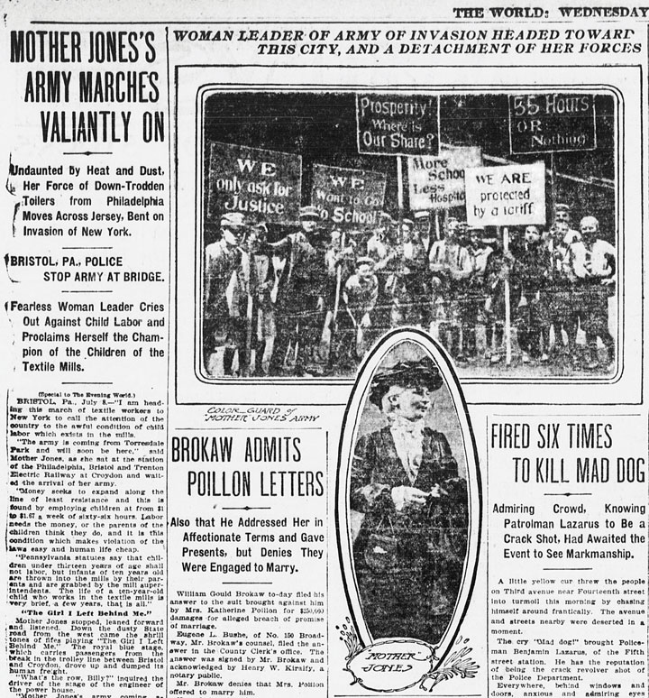Among the most poignant images of the anti-child labor movement are those of very young children holding signs asking for a few hours per week that they might attend school or play with other children.
Efforts to pass federal legislation banning child labor failed until the midst of the Great Depression when Congress agreed that such laws were needed to protect the jobs of adult males. States that passed child-labor laws found that goods made by young children in other states entered their markets. The result was a net loss of local jobs and no discernible reduction in child labor. In 1916, Congress passed a federal law that made it illegal to ship goods that had been made by children under the age of fourteen out of the state. However, this law was voided two years later by the Supreme Court. The court agreed with a North Carolina mill that the law violated the Tenth Amendment, which grants states the authority over matters that are not explicitly mentioned in the Constitution.
Many believed that the only way to truly outlaw child labor was to pass a Constitutional Amendment. In the meantime, Progressive women under the banner of the NCL, NCLC, and other groups lobbied for the creation of the Children’s Bureau as an agency within the Department of Labor. President Taft approved the measure in 1912 and agreed to appoint a woman to the head the new agency out of respect for the efforts of these reformers. Julia Lathrop led the Children’s Bureau for the next decade, using her position and celebrity as the first female head of any federal agency to push for stronger measures to protect children. Other Progressives, such as Harvard professor Alice Hamilton, led investigations that publicized the harmful effects of deadly fumes on the bodies of children who labored in various factories. Still other Progressive women and men documented the conditions faced by children who were employed because of their ability to crawl through narrow mine shafts.
Progressives in Ohio boasted that their law prohibiting boys under the age of sixteen and girls under the age of eighteen from working more than forty-eight hours per week was “the best child-labor law in the United States and probably the world.” In actuality, most industrialized nations had developed much tougher restrictions against child labor than the United States. The Ohio law was passed in 1908, the result of years of activism by Progressives, and came on the heels of a 1906 attempt to pass a law barring children aged fifteen and younger from working more than nine hours per day. Arkansas led the South with a similar law barring child labor, which was passed a few years later.
In the march of time it became necessary to withdraw the children from school, and these machines came to be operated by the deft touch of the fingers of the child.…It is not a question of white labor or black labor, or male labor or female or child labor, in this system; it is solely a question of cheap labor, without reference to the effect upon mankind.
—Eugene Debs in the Socialist newspaper Appeal to Reason, December 1900.
As support for stronger child labor laws grew, the Progressives recognized that one of their chief obstacles to passing these laws was the ability of legislative committees to prevent their measures from reaching the floor for public debate and a recorded vote. As a result, the Progressives directed much of their later efforts toward promoting reforms such as initiative and referendum. Initiative allowed residents to petition their legislature directly, while referendum required that a proposed law be placed on the ballot. Once these democratic initiatives were approved, state legislatures were no longer able to thwart child labor laws and other reforms through inaction. The result was a dramatic increase in anti-child labor laws in the late Progressive Era.
Progressives who sought to create a more ordered world were influenced by business leaders such as Frederick W. TaylorAn engineer from Pennsylvania who advocated “scientific management” of industry, Taylor argued that careful study of every aspect of the production processes could improve efficiency by eliminating unnecessary steps and wasted motions.. Taylor studied the efficiency of steel mills throughout the 1890s, breaking down each of the tasks workers performed into a series of motions. Taylor then analyzed the ways that these motions could be made more efficient. His studies were ridiculed by some business leaders, but others recognized the potential of an idea that became known as “Taylorism”—the theory that scientific study of the production process could reduce wasted time and energy.
Numerous factories paid Taylor and other consultants to study their production processes in hopes of maximizing efficiency. Taylor’s 1911 book The Principles of Scientific Management inspired managers to more strictly regulate the methods workers used. It also led to the speeding up of assembly lines. As a result, workers sometimes felt as if they themselves had become machines. This feeling was especially pervasive when workers were forbidden to leave the assembly line for any reason, including restroom breaks, because their absence would force the assembly line to stop.
The acceptance of Taylor’s theories in business reflected a growing desire to improve the efficiency of organizations through scientific study of operations and by placing experts in charge of management. The same was true of government, especially at the local level where Progressive reformers continued their attack on corruption. Progressives believed that the first key to efficient government was ending the patronage system and awarding jobs to experts. The second step was removing the dictator-like structure of city governments in favor of systems that spread power among specialists who were selected to head specific departments.
Figure 4.20
Debs’s running mate was Emil Seidel, Socialist mayor of Milwaukee. In the early 1900s, two congressmen, scores of state legislators, and more than a hundred mayors representing the Socialist Party were elected. Although the Socialists remained weak on the national level, their ideas were very influential in municipal government.
Progressive reformers studied various examples of local governments as models. The city of Galveston, Texas, had been decimated by a hurricane in September 1900 that cost the lives of an estimated 8,000 people. Relief funds and rebuilding efforts were thwarted by the inefficiency of the city government until the state legislature intervened by appointing a commission of experts to take control. As a result, this important port city quickly recovered. Experts in city planning and civil engineering constructed storm walls and even raised the low-lying parts of the city that had suffered the worst flood damage. As a result, the city withstood a similar hurricane in 1915 with minimal damage or loss of life.
A major flood in Dayton, Ohio, led to the development of another model of civic reform. Rather than adopting the city commission system of Galveston, Dayton replaced the mayor with a city manager who was an expert in the field of urban management. The city manager was appointed by the city council, a provision which assured voter input and accountability. By 1920, over 1,000 cities were utilizing either the city commission system of Galveston or the city manager system of Dayton.
Hundreds of cities took reform even further, leading to public ownership of public utilities. Leading cities in Ohio such as Toledo and Cleveland, along with dozens of other cities, led the way in what has been labeled “municipal socialism.” These city governments built or took control of existing streetcar lines and public utilities. They also created publicly owned water, sewer, and sanitation departments. Milwaukee mayor Emil Seidel was the first of many mayors elected on the Socialist ticket in 1910. Under his administration, Milwaukee developed new departments for public works and city parks. Reforms for municipal electric plants faced larger obstacles, although city and state governments became active in encouraging development of generating stations and distribution systems that would provide their residents with low-cost electricity. Although the idea of direct government ownership in other industries attracted few adherents, the benefits of publicly owned utility companies led many cities to engage in similar programs.
The typical working woman of the late nineteenth century needed their income for survival and occupied low-status positions as domestic servants. Others endured routine and often physically exhausting jobs in textile manufacturing. As a result, the image of a “working woman” had often been associated with notions of victimization and the failure or absence of a male breadwinner. However, by 1900, half a million women worked in offices as clerks, switchboard operators, and secretaries. As the century progressed, upwardly mobile women increasingly occupied professional careers in teaching and nursing as well as clerical jobs. In response, the image of the working woman began to change.
Figure 4.21
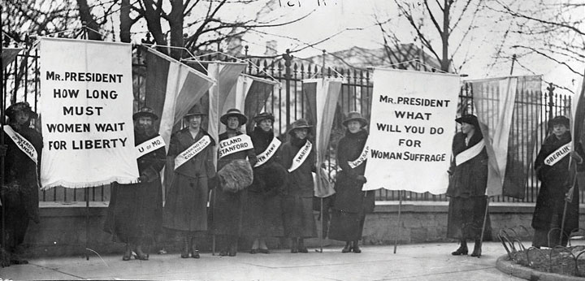Women representing leading women’s colleges such as Vassar join with women representing the University of Kansas, Stanford, and the University of Missouri in a protest outside the White House. A new generation of college-educated women led the suffrage movement as it gained momentum in the Progressive Era.
Middle-class women also joined organizations such as the National Association of Colored Women’s Clubs and the Women’s Christian Temperance Union. As a result, women were becoming engaged in community issues in larger numbers. As more women acquired formal education, entered the paid workforce, and became engaged in public life, they questioned the notion that the home was the only proper place for a woman. These challenges to the status quo were most evident in the growth of the women’s suffrage movement. The early 1900s saw a number of victories for the movement that were both a result and a cause of the increased education, upward mobility, and political activism of women during this era.
Figure 4.22

This 1913 photo shows a parade of suffragists in New York City. Leading suffragists in the West began traveling to states such as New York that had not yet approved women’s suffrage.
The final victory of women’s suffrage in 1920 was only possible because of thousands of successful campaigns to secure the right to vote in school elections, city and county elections, and elections within a particular state. Women in Wyoming, Utah, Idaho, and Colorado had secured their right to vote statewide by 1900. Women in the state of Washington secured a referendum on women’s suffrage that was placed on the ballot in 1910. These women gave lectures and spread flyers throughout the state and convinced a majority of male voters to approve the measure. The following year, a similar effort resulted in the passage of a ballot initiative in California. Recognizing the tendency of male political leaders to jump on the women’s suffrage bandwagon once women in their districts could vote, the women of California recalled that after 1911, no male politician could be found in the entire state who had ever opposed the measure.
Many of the women who were drawn to the cause of suffrage had been active in the public sphere for a number of years before becoming suffragists. Like most Progressives, they focused most of their energies on the problems of urban and industrial America. The condition of workers and the urban poor formed the vanguard of the movement, with numerous Progressive organizations pressing for laws that would limit the maximum number of hours women could be required to work. Both the architect and object of these protective laws, women led the rank-and-file membership of these movements. They also led countless local initiatives and were more likely to occupy leadership roles within civic organizations than any previous era in US history.
By 1900, several million women were already active within local suffrage movements. Millions more would join the National American Women’s Suffrage Association in the next decade. For most women, however, the road to becoming a suffragist began with a particular reform that placed them in the public sphere. The same was true of men within the Progressive movement, many of whom gradually came to support women’s suffrage as a tactical goal to promote a specific reform such as Prohibition. A few years of actively promoting a public cause tended to transform Progressive men and women from relative indifference regarding the suffrage question to supporting votes for women to more effectively pursue their own reform agenda. Before long, Progressive women and men began to support women’s suffrage on its own merit as part of the larger crusade for social justice.
Although suffrage remained controversial, Progressives generally avoided social taboos. For example, few Progressives supported the efforts of Margaret SangerA nurse who was originally from the state of New York, Sanger toured internationally promoting the legalization of contraceptive methods and was the founder of Planned Parenthood. to discuss “birth control.” Sanger was a nurse who did not invent the methods she discussed, but she was among the first to publicly breach the social taboos regarding the subject of birth control. A handful of Socialist journals were among the first to print her articles. However, by 1914, Sanger was publishing her own serial publication titled the Woman Rebel. Because this journal was distributed through the US mail, it was subject to the Comstock Laws, which banned the circulation of “obscene” material. At the time these laws were passed and throughout the early decades of the twentieth century, spreading information regarding contraception was considered indecent. It was even subject to state and local penalties. After fleeing to Europe, Sanger returned to the United States and opened a women’s clinic that distributed diaphragms. She also spread information suggesting that a woman should both enjoy sexual relations and control her body’s reproductive system.
Arrested for promoting ideas and methods that offended the sensibilities of many social conservatives and Progressives alike, Sanger quickly became notorious as the leading public advocate of birth control. Her infamy led to the spread of information regarding birth control by both her supporters and critics. Newspapers throughout the nation discussed the issue, although her detractors often used creative methods to avoid printing details about the subject. In 1921, Sanger formed the American Birth Control League. Sanger was also active in poor and immigrant communities she identified as being vulnerable to unwanted pregnancies.
Sanger’s choice to focus on these communities was influenced by the fact that wealthy women were usually able to secure these same services discreetly. In addition, Sanger’s clinics were able to operate beyond the public eye in poor communities. Some immigrants perceived that the efforts of some birth control advocates in their communities were directed at reducing their numbers, a selective form of population control. Scholar Harriet Johnson’s provocative book Medical Apartheid demonstrates the ways that birth control and other medical experiments regarding fertility were used against African American communities in these years and beyond. For most African American women and men of the early 1900s, however, their most immediate concerns were economic discrimination and the spread of Jim Crow.
Among a number of prominent black leaders at the turn of the century, two men came to represent two different perspectives regarding the challenges faced by black America. W. E. B. Du BoisA leading intellectual and a professor at Atlanta University, William Edward Burghardt Du Bois was also a civil rights leader who founded the Niagara Movement and was the leading black member of the early NAACP. He combatted racism in all of its forms and was a leading proponent of Pan-Africanism. was the first African American to receive a PhD from Harvard University. As a Northerner, and especially as a wealthy and well-educated member of the black upper class, Du Bois advocated for equality of opportunity in education and other endeavors. He believed any accommodation to segregation or white supremacy, even to achieve tactical gains such as better schools or opportunities for black workers, was contrary to the best interests of the race if these concessions required the acceptance of segregation. In 1903, Du Bois published the Souls of Black Folk, which included a chapter that challenged the views of the most famous black American at this time, Booker T. WashingtonThe most famous African American of his era, Booker T. Washington was the founder and president of Tuskegee Institute in Alabama and the leading fundraiser for black schools and colleges in the early twentieth century. Washington was criticized as accommodating segregation as part of a tactical maneuver to gain support for basic education and job training skills for African Americans. At the same time, Washington also supported a number of black liberal arts colleges and secretly provided funds for some early civil rights initiatives.. Du Bois believed that Washington had no right to speak for all black Americans. He also believed that Washington accommodated white supremacy by accepting segregation in a mistaken attempt to foster goodwill among Southern whites.
Figure 4.23
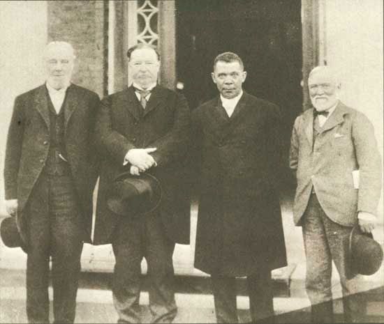Booker T. Washington was an effective fundraiser for African American schools and colleges in a time period when public funds were directed towards white-only schools. He is pictured here with philanthropist Robert C. Ogden on the far left, Secretary of War and future president William Howard Taft to the left of Washington, and Andrew Carnegie on the right.
Washington had risen from a childhood working in the salt mines of West Virginia to becoming the most famous black educator in America. He transformed a one-room school in Tuskegee, Alabama, into a college that prepared thousands of black women and men for careers in education and industry. Perhaps most impressive, Washington achieved this feat by securing funding from the all-white state legislature of Alabama.
In 1895, Washington was asked by the directors of the Cotton States Exposition in Atlanta, Georgia, to deliver a speech that would demonstrate to the world that race relations in the South were stable. Washington understood that these leading white Southerners were motivated by a desire to attract investment to the region by minimizing the importance of racial discrimination, but he saw the speech as an opportunity to demand fair treatment. Calling on whites to treat black workers with more fairness, Washington offered acceptance of segregation in exchange for humane treatment and a commitment to equal funding for black schools and better job opportunities for black workers. At this time, schools for Southern black children received only a third to a quarter of the funds allocated for white children. African Americans in the South understood Washington’s tactical approach, and many applauded his efforts to find any way to increase funding for black schools and greater job opportunities. These individuals were more concerned about building better schools and black-owned businesses than the “privilege” of attending classes alongside white children. Others disagreed, labeling Washington’s speech the Atlanta CompromiseAn 1895 speech given by Booker T. Washington at the Cotton States International Exposition in which he proposed an acceptance of separate institutions for whites and blacks so long as African Americans were given greater opportunities for education and jobs. and Washington’s willing acceptance of segregation under any terms as accommodation to white supremacy.
The juxtaposition of the ideas and perspectives of Booker T. Washington and W. E. B. Du Bois provides a starting point for understanding the ideas and challenges faced by black leaders at this time. Early civil rights activists discussed the merits of both conservative and radical ideas and tactics. These debates were printed in scores of black newspapers, providing historians a wealth of primary sources that demonstrate the intellectual vibrancy of the communities they served. Conservatives such as Washington sought gradual change and tactical goals like equal funding for separate schools. Radicals such as Du Bois opposed such tactics in favor of lawsuits challenging segregation.
Radicals and conservatives also differed on topics such as the creation of vocational training schools. Conservatives recognized that such training would prepare men and women for jobs as laborers, but radicals feared that these institutions might discourage black Americans from pursuing other forms of higher education. However, one must remember that someone who was generally radical or conservative could often support both tactical approaches. For example, Washington secretly diverted money to finance civil rights lawsuits from funds he had secured from paternalistic whites who intended to support programs that would train black men for jobs as laborers. At the same time, Du Bois had tremendous respect for the work done by black trade schools and recognized that Washington was very effective as a fundraiser for these kinds of schools.
While Washington looked towards vocational training and practical education programs, Du Bois believed racial equality was predicated upon the leadership of black men and women who had acquired higher education and leadership skills. He referred to these African Americans as “the talented tenth,” and emphasized his belief that the advancement of all societies was based on a similar percentage of well-educated innovators and leaders. Du Bois rejected the notion that black colleges should focus only on vocational skills. He worked with other professors to maintain a rigorous academic program at Atlanta University (Clark Atlanta University today) where he taught history and sociology.
In 1905, Du Bois called for a meeting of back leaders to create a national civil rights organization. Many historians believe the group intended to meet in Buffalo, New York, until the hotels of that city refused accommodations to these men. Others question this assumption, pointing out that hotels in Northern cities were usually willing to accommodate wealthy African American leaders when they traveled. The group stayed in nearby Niagara, and their organization became known as the Niagara MovementAn African American civil rights organization formed along the New York–Canada border by W. E. B. Du Bois and other black leaders in 1905. . The group had little difficulty finding accommodations in eastern West Virginia for their second annual meeting at Harper’s Ferry, the site of John Brown’s historic rebellion against slavery. By 1909, the women and men of the Niagara Movement helped to create the National Association for the Advancement of Colored People (NAACP).
Figure 4.24
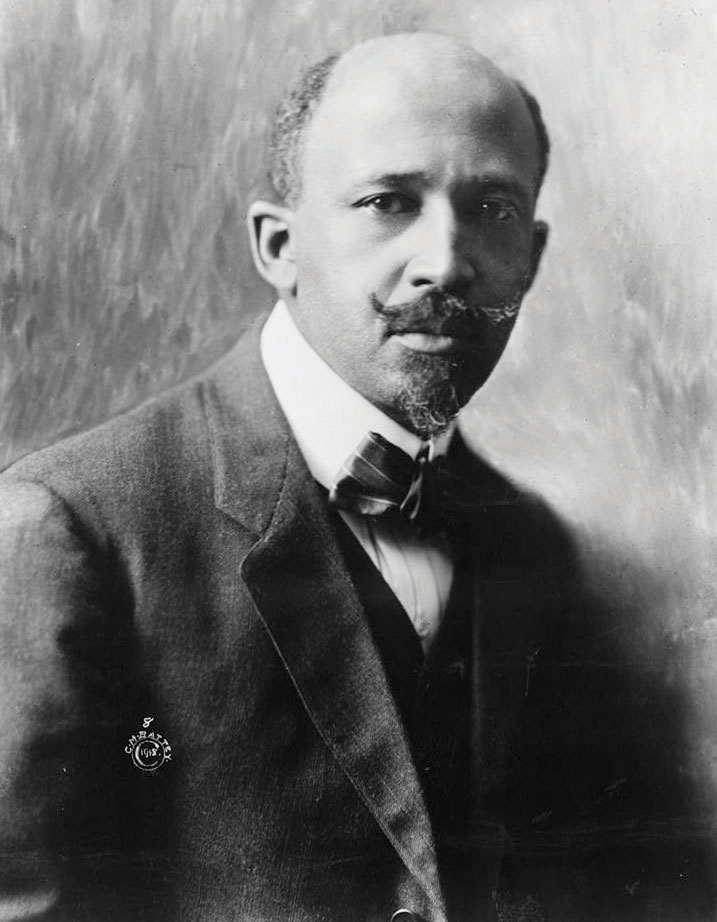W. E. B. Du Bois believed that Booker T. Washington’s acceptance of segregation was unacceptable, even as a tactical maneuver to secure more funds for black schools. Du Bois initiated a national civil rights organization known as the Niagara Movement in 1905.
Du Bois also sought to correct the historical image of race and slavery that was created by white scholars during this era. Scouring the archives for primary sources, such as letters written by former slaves to former owners, white historians sought to validate the popular image of the contented slave. The letters of thousands of slaves were scoured for a single sentence that might be cited to prove that they had been well treated or had kind memories of their previous life in bondage. Given the millions of individuals who had been enslaved, the peculiarities of nostalgia and memory, and the power of institutions such as family and community, these historians found many examples of positive memories. They often cited these examples out of context to further their quest to vindicate the “peculiar institution” of American chattel slavery. Du Bois confronted this historical ventriloquism by collecting sources of African Americans along with other black scholars such as Carter Woodson. Together, they and other historians published journals and books that presented the perspectives of African Americans.
The last term of an African American congressman expired in 1901. No black American would serve in Congress again until Chicago’s Oscar De Priest in 1929. In most areas of the South, the only way blacks could vote was with their feet. An estimated 200,000 African Americans demonstrated this last measure of agency by migrating to the North between 1890 and 1910. A million and a half more would abandon the South in the next two decades, a phenomenon known as the Great Migration by historians.
Without the right to vote in the South where 90 percent of African Americans still lived in 1910, the opinions of blacks could be ignored with impunity by national political leaders such as Roosevelt or Taft. Roosevelt demonstrated his lack of concern for the perspective of black Americans by issuing a dishonorable discharge of three companies of black infantry after a violent incident that occurred in 1906 between white civilians and a group of black soldiers in Brownsville, Texas. Neither the army nor the president gave the soldiers an opportunity to defend themselves through a court martial. In fact, there was barely any investigation of the incident. The majority of those discharged had no connection to the altercation whatsoever as they had remained on post on the day the conflict occurred.
The black vote was important in many Northern cities and might often make the difference in local and state elections. However, from the perspective of national politics, the black population outside the South represented only 1 percent of the total population at the turn of the century. As a result, neither party felt compelled to make the needs of African Americans a priority if doing so risked losing votes in the white-only elections of the South. Although critical in local elections in many cities, the Republican Party took black electoral support for granted in national elections, and Democrats rarely even bothered meeting with black leaders. In the decades following Reconstruction, the Republican Party shifted from fighting the racism of Southern whites to accommodating it in an attempt to broaden their electoral base among whites. Although black leaders found few alternatives to supporting the Republicans as long as the Democrats remained the party of white supremacy, in future decades, a new generation of Democratic leaders would begin to court black voters.
Similar to “liberal” issues such as women’s suffrage, Progressives were more likely to support moderate civil rights reforms and antilynching legislation. However, some white Progressives actively supported the enactment of segregation laws because they accepted the tenets of white supremacy and thought such laws would reduce racial friction. Yet to discard the entire Progressive movement as racially conservative would be to ignore the growing black middle class who supported the ideas of the Progressives and worked to frame racial equality within the era’s campaigns for social justice.
Figure 4.25

Mary Ritter Beard and her husband Charles Beard were two of the leading historians in the early twentieth century. Mary Ritter Beard was also active in the women’s suffrage movement and was a lifelong advocate of social justice and women’s education.
Although the Fourteenth Amendment was intended to protect African Americans from violations of their rights as citizens, the Supreme Court had declared that segregation was consistent with the amendment and with its 1896 decision in Plessy v. Ferguson. In the early 1900s, the court interpreted “due process of law” to protect corporations. Meanwhile, less than a handful of individuals were ever convicted in response to the annual lynching of several hundred African Americans. Black leaders such as Ida Wells lobbied on behalf of a federal antilynching law. Although more than two hundred bills that would have made lynching a federal crime were introduced, only three ever passed the House of Representatives. None of these bills ever became law due to the united opposition of white Southern Democrats.
During the 1930s, singer Billie Holiday recorded a chilling ballad reminding the nation that “Southern trees bore strange fruit.” However, few whites North or South chose to speak out on the issue of lynching because of the assumption that most victims of lynch mobs were guilty of committing rape. In this and countless other ways, historians Mary Ritter Beard and Charles Beard observed, any support of even the most basic civil rights for African Americans “had become bad form in the North.” While the Beards and others explored race beyond the Mason-Dixon Line, a growing number of black scholars exploded the myth that lynching was connected to crimes against women. Instead, they argued that lynching was a collective display meant to bolster white supremacy and vent feelings of rage against a despised “other.” They believed that black victims, whether innocent or guilty of any crime, served as a scapegoat for the personal failures of those who participated in the mob killings.
Expressions of this brand of rage became commonplace, and hundreds of Northern trees were stained by the same blood that ran in the South. Lynchings in the North and West often resulted in a trial, but the perpetrators were seldom convicted of their crimes. North and South were not so different in this regard, nor were they different when it came to a different kind of violence—the daily execution of black ambition. “Why do we send our children to high schools and academies,” a black educator asked, only “to earn $1.50/day cleaning the sewers?” By focusing nearly exclusively on the most obvious manifestations of racial violence, historians have sanitized the violence of miseducation. By excluding black perspectives and ignoring the history and culture of nonwhites, schools reinforced the assumption of white supremacy. Equally disturbing is the fact that the creation of the color line in thousands of Northern and Midwestern communities has been expunged from the historical record. Most US communities maintained formal or informal systems of segregated schools. For example, school board records throughout Kansas, Iowa, Nebraska, and Illinois record the existence of “colored schools” in nearly a hundred towns. However, textbooks that teach the history of these states do not include any of these examples beyond the famous Topeka case of Brown v. Board of Education. Some even incorrectly assure their young readers that the schools of their states were always racially integrated.
A small but growing number of historians are challenging the notion that black history was limited to the South during these years. They also challenge the notion that civil rights activism was unique to the 1950s and 1960s. Although national leaders such as Booker T. Washington may have at least superficially adopted a strategy of conciliation, historians are now turning the lens of local history to challenge the notion that the other 8 million African Americans who lived during the “nadir of race relations” wore the same mask. This change in perspective from national to local is challenging historic interpretations and revealing the complexity of an era that saw a dramatic rise in black education and entrepreneurial ventures that coincided with an increase in racial violence.
Historians have recently uncovered dozens of civil rights cases involving schools, restaurants, hotels, theaters, riverboats, railroads, and even elevators during every year of the early 1900s. In about a third of the cases that have been discovered in the Midwest, the black plaintiffs won. The number of lawsuits declined over time because the results rarely justified the effort. Penalties for violators were usually minimal, and any compensation paid to the plaintiff was often insufficient to cover the expense of taking the case to court. However, sources indicate that the possibility of being sued for discrimination reduced the tendency for whites in states with civil rights laws to practice at least the most overt forms of discrimination.
Figure 4.26

Many US newspapers utilized a variety of negative stereotypes to depict Asian immigration as a threat to America. While most presented the idea that immigrants would take jobs away from “native Americans,” some presented the immigrants themselves as a threat.
America’s relationship with its empire reflected a variety of competing ideas regarding race, science, and culture. Many Americans embraced OrientalismThe imitation of Eastern art and culture by Westerners., the practice whereby people in the Western Hemisphere appropriated Eastern art, music, literature, and culture to fit their own preconceived ideas of Asia and Asians as “exotic.” Just as some Americans sought to romanticize the meaning of Native American history and experience without truly understanding the perspectives of Native Americans, an imagined “Oriental” culture became fashionable among middle and upper-class Americans seeking authentic experience beyond their own material affluence.
Others tried to prove the existence of innate racial differences using a pseudoscience called eugenicsA pseudoscientific field of study that is based on the idea that human evolution can be facilitated by preventing the reproduction of inherently inferior peoples.. Eugenicists sought to demonstrate that lighter-skinned races were more evolved. They used techniques that appeared to be scientific, such as measuring the size of brains. Of course, the relatively obvious agenda of eugenicists, who conducted “research” to validate their own predetermined conclusions about white supremacy, made most academics doubt the integrity of eugenics as a scientific discipline. Even during the early 1900s, most scientists distanced themselves from the eugenicists, even if they shared many of their racial assumptions.
Figure 4.27
Filipinos were placed on display during the 1904 World’s Fair in St. Louis. A different US city hosted a World’s Fair nearly every other year, and each featured similar exhibits of indigenous peoples. These displays often mixed the paternalism of their organizers with the agency of their “performers.” The result was a mixture of genuine displays of indigenous culture and life within a Eurocentric cabaret that assumed the “backwardness” of other civilizations.
This form of scientific racism reached its peak during the 1920s. However, it may have never been more clearly celebrated than at a living display of “primitive” races during the 1904 St. Louis World’s Fair. The purpose of the exhibit was to show that the indigenous peoples of the Philippines were progressing under the tutelage of the federal government. When it arrived in the Philippines in 1898, the US military appropriated existing police forces that were then employed to pacify those who resisted American occupation. The 1904 display juxtaposed these uniformed men against various “primitive” peoples such as the “Moros” who practiced Islam and the “monkey-like Negritos” who were practically naked.
The intended message of Filipino inferiority may have worked too well. The federal government, future president William Howard Taft, and even President Roosevelt intervened when it became clear that fairgoers were leaving the “Congress of Races” believing that the Filipinos were too primitive to ever become civilized. A cartoon published in a local newspaper showing President Roosevelt attempting to place trousers on the Filipinos was merely a comic expression of the actual efforts to micromanage the display and present the desired message of the US government regarding its empire. As historian Robert Rydell has shown, correspondence of President Roosevelt’s private secretary includes concerns that the appearance of men wearing “a mere G string” did not support the government’s message about the Philippines. “If fairgoers perceived the villagers as utterly backward and incapable of progress,” Rydell explains, “the displays would actually buttress the racists’ arguments used by anti-imperialists to oppose annexation of the islands.”
Figure 4.28

The Southwestern Borderlands were always a melting pot and a center of ethnic and cultural conflict. In this image, an Anglo cowboy plays cards with a Native American and a migrant from Mexico.
While Filipinos and most other residents of overseas US possessions would not be eligible to migrate to the United States at this time, migration from Latin America, the Caribbean, and South America was not restricted by law or quotas. The Newlands Act of 1902 spurred migration, as millions of acres of Southwestern land came under cultivation due to federal irrigation projects. In 1904, a railroad connecting Brownsville and the rest of the Rio Grande Valley with Corpus Christi was completed. The railroad signaled a sudden influx of Anglo land speculators and family farms in what had been an area dominated by Mexican haciendas (large estates) and the vaqueros (cattlemen).
The total population of Texas’s Rio Grande Valley quadrupled between 1900 and 1930. The population increase was fueled by the migration of Anglo and African American land seekers as well as field laborers from Mexico. Three hundred thousand Mexicans entered the United States between 1910 and 1920, most fleeing political and economic turmoil during a series of revolutions and civil wars in Mexico. While the vast majority of Mexicans were drawn to the United States by the promise of steady employment, about 20 percent were professionals, landowners, or skilled laborers who feared reprisal for their connection to the former Mexican President Porfirio Diaz. By 1920, recent immigrants from Mexico comprised 12 percent of the California population. A decade later, nearly a million people and approximately 7 percent of the entire population of Mexico had migrated to the United States.
Figure 4.29
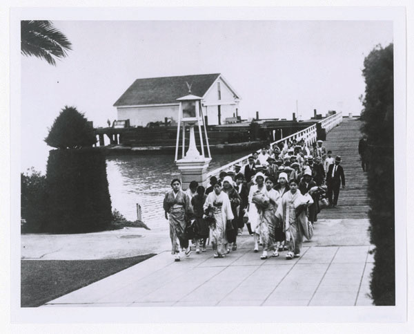Asian immigrants entering the United States from Angel Island, a processing center in San Francisco Bay that served a similar function as New York City’s Ellis Island.
Although nativists were beginning to organize against the migration of Mexican laborers, the strongest nativist opposition in the West was waged against Asian immigrants. In 1905, nativists and local labor unions in San Francisco established the Asiatic Exclusion League. Among the goals of this organization was the expansion the Chinese Exclusion Act of 1882 to prevent the migration of Japanese and Korean families to the United States.
Similar sentiments and the famous 1906 San Francisco earthquake, which destroyed many of the city’s schools, led the San Francisco Board of Education to expand their system of segregation. Responding to native sentiment, the board barred students of Japanese and Korean descent from their neighborhood schools and required them to attend separate schools that had previously been established for Chinese students. In addition to the hardships this created for families that lived all over the city, Japanese Americans protested the board’s action for its obvious symbolic meaning. Local protests were soon joined by international outrage. In addition to concerns regarding segregation, Japanese leaders protested their children’s restriction to schools with Chinese students given the long-standing tensions between the two nations.
Japan had just defeated Russia in the 1905 Russo-Japanese War and believed that the school board’s decision was an affront to the international honor of their nation. President Roosevelt had served as the architect of the peace treaty between Russia and Japan, which was signed in New Hampshire. As a result, Roosevelt held the Japanese in high esteem and feared that angering the increasingly powerful nation of Japan would derail US efforts overseas. Because of these geopolitical concerns, the federal government intervened in hopes of maintaining diplomatic relations and trade with Japan.
At the same time, nativist sentiment in the United States demanded that the exclusionary laws barring Chinese immigration be extended to Japan and Korea. In an effort to appease these sentiments without further alienating Japan, diplomats and political leaders agreed to a secret compromise. The federal government agreed it would not ban Japanese migration in exchange for a promise by the Japanese government to deny visas for all Japanese wishing to immigrate to the United States. In addition, the federal government persuaded the San Francisco school board to limit segregation to Chinese children. The key to the agreement was that it was unofficial, allowing the Japanese government to officially proclaim that its citizens were welcome to migrate to the West, and they simply chose not to do so. As a result, the informal pledge was known as the Gentleman’s Agreement of 1907The name given to an informal pact between US and Japanese officials in 1907. The United States agreed to not explicitly ban Japanese migrants from entering the United States (as it had Chinese migrants) so long as Japan prevented its citizens from migrating to the United States..
Laws barring Chinese migration allowed sons (but not daughters) of Chinese migrants to also enter the United States. The goal of this law was to permit a small number of family members and laborers to still come to the United States, while preventing the creation of a self-sustaining and permanent Chinese population. A similar but informal agreement allowed the family members of Japanese Americans who already lived in the United States to also migrate to America. Ironically, a fire caused by the San Francisco Earthquake also destroyed many public records. As a result, a significant numbers of migrants arrived claiming to be related to Asian Americans who had arrived earlier and obtained citizenship. Many of the Chinese male immigrants were known as “Paper Sons” because they had arrived bearing records claiming lineage to men that may or may not have been their actual fathers.
By 1905, a million immigrants from Italy, Greece, Russia, and the Balkans of South Central Europe were arriving in the United States each year. Many of these immigrants were Jewish refugees who fled the latest wave of pogromsA series of attacks on Jews in Russia at the turn of the century that were intended to eliminate the Jewish population of Russia. The pogroms led to significant Jewish migration to the Untied States.—the anti-Semitic attempts at ethnic cleansing in Russia. Some Russian leaders sought to completely purge their empire of its Jewish population during the late nineteenth and early twentieth centuries. These attacks escalated between 1903 and 1905 and resulted in hundreds of thousands of Jewish immigrants entering the United States between these years. By the early 1920s, an estimated 2 million Jews were living in the United States.
Figure 4.30
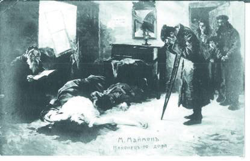“Back in the Homeland” by Moshe Maimon. Maimon was a Jewish artist whose work often depicted the violent attacks on Jews in Russia which were known as pogroms.
The majority of these migrants lived in major East Coast cities such as New York, Philadelphia, and Baltimore. However, sizeable Jewish communities were also created in Midwestern towns and Southern port cities such as Galveston, Texas. Prominent Jewish leaders such as Jacob Schiff founded the American Jewish Committee as part of a larger movement to confront anti-Semitism and create a support network for the new arrivals. After a mob in Atlanta seized and lynched a Jewish man who had been accused of rape, Jewish activists and supporters in the United States formed the Anti-Defamation League (ADL)The leading Jewish civil rights organization in the United States, the ADL was founded in 1913 in the wake of a lynching of a Jewish American man in Atlanta..
The core membership of the ADL in its early years were leaders and members of a Jewish fraternal organization known as the Independent Order of B’nai B’rith. This organization had been formed in the United States prior to the Civil War. Anti-Semitism had existed in the United States since the colonial period, but the relatively small numbers of Jews prior to the turn of the century had mitigated the expression of these prejudices. Due to the rapid increase in the number of American Jews, as well as the success of several high-profile Jewish bankers and the proliferation of local Jewish merchants, the old stereotypes and prejudices that had plagued Jews in Europe and Russia began to appear with greater frequency and intensity in their new country. During the 1920s, the United States would enact quotas designed to curb the number of Jewish migrants and other groups from central and Southern Europe. By the time of the Holocaust, anti-Semitism was so strong that efforts to temporarily waive these immigration restrictions and provide sanctuary for European Jews were derailed until the final year of World War II.
Figure 4.31
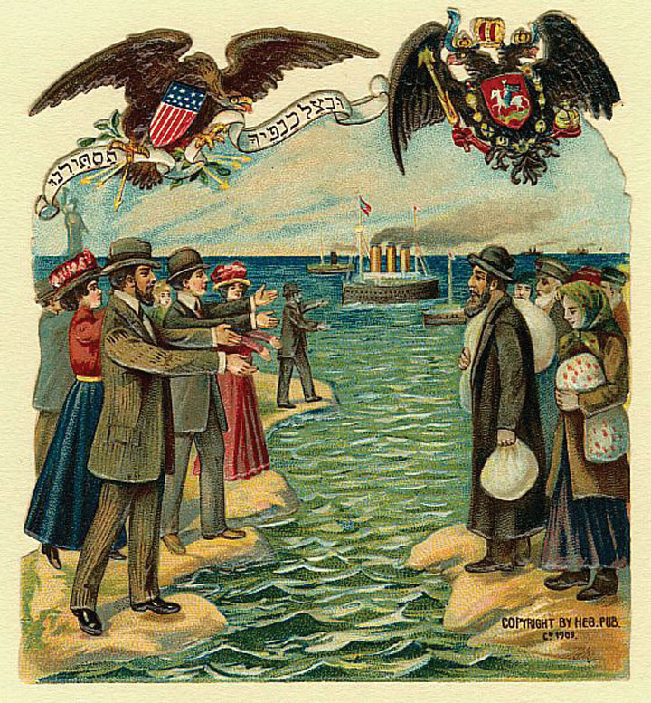Migration from Europe and Russia to the United States was facilitated by American Jews who provided physical shelter for the immigrants while also shielding the newcomers from anti-Semitism in America.
While Jews faced stereotypes associating them with greed and capitalistic avarice, other immigrants arriving during these years were often typecast as impoverished vagrants. In reality, immigrants were rarely the poorest residents of their homelands due to the prohibitive costs associated with traveling to the United States. Many of the new arrivals settled within ethnic clusters located in major cities—a tendency that was both the product of prejudice and the source of allegations that the newcomers were “clannish” and did not want to learn English or assimilate into the larger society. As a result, immigrants and immigrant communities were frequently portrayed as “un-American.” In reality, these communities celebrated their new homes and sought to incorporate American culture into their traditions. These communities functioned as a mediating institution between the two cultures and prevented newcomers from experiencing a sudden and complete break with their own heritage and identity.
The most obvious forms of hostility to the new immigrants were usually motivated by economic concerns. For example, a group of Greek workers were hired in Omaha as strike breakers during a series of labor conflicts involving the city’s beef-packing industry. An unrelated killing involving a spurned lover’s jealousy against a Greek man who was living with a “white” woman set off an explosion of anger in February 1909. By this time, existing prejudices against the city’s expanding Greek community led to a series of editorials blaming low wages and crime on the residents of the Greek neighborhood. A mob of several thousand gathered in favor of a petition to rid Omaha of “filthy Greeks” in the wake of the killing. After an hour of impassioned speeches, including an emotional appeal of the brother of the man who had been shot by a Greek resident during the lover’s quarrel, the mob converged on the Greek neighborhood.
Figure 4.32

One of many newspaper reports of the attacks against Greek workers in the beef-packing district of South Omaha during the anti-Greek Riot of 1909.
The resulting Anti-Greek Riot of 1909An attack on the entire Greek population of Omaha, Nebraska, that led over a thousand Greek Americans to flee the city and inspired similar attacks on Greek immigrants in other factory and beef-packing towns. led to a mass exodus of Omaha’s 1,200 Greek residents. It also touched off similar race riots directed against Greek migrants in other communities such as Dayton, Ohio. One observer recalled that the “Americanism” of many mob members was “of recent origin,” pointing to the irony that many of the participants were recent immigrants themselves. Regardless of their own status, “all felt the deeper thrill when the eloquence was poured forth,” the observer recalled, because “they were not Greeks.” “The fact that they were different from the Greeks was enough to make a common bond for that particular brotherhood,” the observer concluded, “especially when it became clear that the Greeks were to be attacked and pillaged and that the assailants might enjoy the strength that comes from union.”
Traveling shows continued to reach even the most isolated rural areas of the United States. By 1900, agricultural commodity prices had become a bit more stable, permitting many rural dwellers to take advantage of special “excursion rates” that offered discounted rail travel to nearby cities. Saloons also sought to attract more customers by offering free food or even a free vaudeville show to thirsty city-goers. By the turn of the century, saloons were the most numerous business in many urban neighborhoods, outnumbering the diverse local purveyors of dry goods, produce, and meat. Saloons even proliferated in “dry” cities and counties, regardless of the efforts of the WCTU and other Prohibitionists.
Baseball continued to grow in popularity, despite a series of scandals involving gambling that ranged from local teams to the major leagues. Allegations that gangsters and bookies had corrupted the integrity of the game would culminate in 1919 when the Chicago White Sox intentionally lost the World Series to the Cincinnati Reds. The scandal led to the growing popularity of local teams, including those composed of African Americans. One of the most interesting traveling teams was an Iowa-based club known as the All Nations. This team traveled on its own rail car and featured players of various racial and ethnic backgrounds. Other sports such as horse racing had been dominated by African Americans but drew the color line by creating rules requiring membership in all-white jockey associations. Although a handful of black sports stars such as cyclist Marshall Taylor and jockey Isaac Murphy would acquire a measure of fame and fortune, most were excluded from both team and individual sports.
Boxer Jack JohnsonThe first African American to win the heavyweight title in boxing, Jack Johnson angered whites by not only beating the popular Jim Jeffries but emasculating him in the ring in their 1910 bout in Reno, Nevada. Johnson also openly dated white women in violation of a social taboo of the early twentieth century. was the most notable exception to the general trend of black exclusion from sports. In 1908, Johnson defeated the reigning heavyweight champion Tommy Burns. The fight was held in Australia because no US venue agreed to host the interracial bout. Most white Americans discounted the fight’s significance, pointing to the fact that Burns had only been given the title after the undefeated champion Jim Jeffries retired. The backlash against Johnson was so strong that Jeffries agreed to come out of retirement for the sole purpose of putting Johnson “back in his place.” Other black boxers had won the championships of other weight divisions, but Johnson’s victory was much more disturbing to many whites because of his bravado and tendency to date white women in violation of the era’s social mores. Whites were so angry when Johnson defeated Jeffries in 1910 during a highly anticipated fight in Reno, Nevada, that dozens of episodes of racial violence exploded throughout the country.
Figure 4.33

Jack Johnson defeated Jim Jeffries in 1910 in Reno, Nevada. This victory made Johnson the undisputed heavyweight champion. Whites at this time expected black athletes to act with great humility, but Johnson displayed bravado and flouted his wealth.
In Americus, Georgia, a black man was beaten, shot, lynched, and then set on fire by a white mob for failing to hide his pleasure at the way Johnson humiliated Jeffries in the ring. Whites who could not stop the fight or its outcome wanted to send the message that Johnson’s victory had changed nothing. The mania with which the mob tore the man’s flesh demonstrated a fear that African Americans were advancing—not only in sports but throughout society—despite attempts to maintain white supremacy.
A young African American named James Nabrit walked past the spot where the lynching had taken place on his way to the one-room school reserved for the education of his race in that Georgia town. He withstood a gauntlet of abuse each day on this walk as whites taunted him, attempting to thwart his ambition in ways that paralleled the 1910 mob. They failed. James Nabrit made that walk every day, eventually graduating first in his class at Northwestern Law School. He would later serve as one of the lead attorneys on behalf of the NAACP in Brown v. Board of Education, which outlawed school segregation throughout the nation.
The growing popularity of hypermasculine sports such as boxing was partially a reaction to concerns about the influence of modernity on the martial ethic. Teddy Roosevelt became the leading spokesman for those who feared that “overcivilization” had led middle-class men to lose touch with their own masculinity. Prior to the growth of the corporation, middle-class men were prosperous gentlemen farmers and artisans. These men might not have worked with their hands every day, but they were still connected to the hard and substantial productive labor of the farm and shop. Equally important, they were the masters of their domain as independent producers.
After the turn of the century, the majority of middle-class men were midlevel employees who had to submit to the authority of other men. They neither owned nor controlled productive property nor commanded or conducted physical labor. The number of such jobs in corporate offices multiplied tenfold in the decades following the Civil War. The fact that much of their work was being assigned to a growing army of women did little to counter the fears that clerical labor was emasculating a generation of American men.
A secondary concern was that the growing number of female school teachers was leading young men to become “soft” while eliminating masculine role models. American men had always been raised by women, but this new generation of women was seemingly different from the submissive matron of the past, or at least the popular imagination of the past. Women were increasingly demonstrating their ability to compete in the marketplace and agitating for the vote in every community. Women were also clamoring for the eradication of the saloons where men had gathered in the past. Even the boxing ring and gambling houses had been closed following the campaigns of female reformers. These were progressive changes from the perspective of those horrified by the crippling violence and financial ruin that occurred in such “manly” places. For those already convinced that masculinity was on the decline, the growing power of women to influence politics and constrict the separate sphere of manly recreation was further proof that men were under siege in a battle of the sexes.
The solution, it appeared to some, might be found in other kinds of battles. Roosevelt declared that the Spanish-American War had led to national revitalization through cultivating the martial ethic and rekindling the manliness of generations past. “If we shrink from the hard contests where men must win at hazard of their lives,” Roosevelt counseled, “the bolder and stronger peoples will pass us by, and will win for themselves the domination of the world.” Roosevelt’s exhortation contained multiple references to masculinity, his final exhortation a challenge to the new generation of men who must resolve to fulfill their duties “manfully.” Behind the nationalistic bluster, Roosevelt’s defense of “splendid little wars” as a method of preventing American men from growing soft and effeminate demonstrated that the conception of masculinity could be cited in defense of aggression as well as protection.
For most of the nineteenth century, manliness was based on the notion of paternal duty and obligation. Historians of gender have shown that the concept of masculinity was related to one’s success as a patriarch and provider. The worst gender-based insult at this time was to refer to an adult male as a “boy.” Whites regularly used this word to emasculate minority men, denying their independence and therefore rejecting their manhood. By the turn of the century, the conception of manliness and the language used to express it had shifted. Perhaps in relation to concerns about the growing power and influence of women in a world where physical labor was becoming less relevant, men began to define masculinity in opposition to female traits and characteristics. As a result, the worst insults for men were those suggesting effeminate traits. In fact, the entire conception of “emasculation” shifted from projecting immaturity to the use of gender-based and often misogynistic insults.
A “cult of masculinity” emerged in twentieth-century America where prize fighters like Jack Dempsey were idolized. Enlisted soldiers and sailors had previously been held in low regard because these ranks were occupied by the lowest social castes. In the past, such soldiers and sailors were often considered “boys” due to their poverty and bachelorhood. The cult of masculinity reversed that view and military men were increasingly admired for their martial prowess. Bodybuilding had also been held as suspect—either as a vain pursuit or one related to the underground world of homosexuality. By the turn of the century, bodybuilding emerged as a manly pursuit that some middle-class men believed might alleviate some of the consequences of sedentary work routines. As a result of this changing definition of masculinity, the concept of heterosexuality emerged in opposition to homosexuality.
Prior to the turn of the century, heterosexuality did not exist as a category and was merely an assumed trait. People who would later be classed as homosexual were simply marginalized in ways that precluded any deep level of analysis by the dominant society. Psychiatrists and physicians who wrote about the subject tended to assume that gay men were simply men who possessed “feminine” brains. Self-identified homosexual men thought of themselves as “queer,” a word that connoted uniqueness rather than a negative stigma. The era’s hypermasculinity and the absence of concepts of “straight” and “homosexual” meant that straight men could commit homosexual acts without being considered homosexual. As long as they did not demonstrate effeminate mannerisms associated with “fairies”—a derogatory term applied only to effete homosexuals—a man might successfully project his own homosexual urges upon a male sex partner.
A wealth of primary sources demonstrates the widespread acceptance of this seemingly incongruous way of thinking. For example, newspaper articles frequently described the debauchery of soldiers and sailors on leave who visited both male and female prostitutes. In most cases, the authors only considered the makeup-wearing male prostitutes as “deviants” and “fairies” because of their effeminate dress and mannerisms. The soldier and sailor retained their masculinity regardless of their choice of sexual partner as long as they retained the dominant (masculine) sexual role in that liaison and eschewed effeminate behaviors. Sources from prisons and mining camps likewise demonstrate the degree to which this cult of masculinity permitted men to engage in sex with other men without being regarded as homosexual themselves. The social construction of sexual deviance as related to effeminacy created a closet around many male homosexual acts while vilifying homosexuals who displayed effeminate traits.
Figure 4.34
This 1924 photo shows Mary Harris “Mother” Jones with President Coolidge. Jones faced death threats and was arrested on multiple occasions for her efforts promoting labor unions among miners in Pennsylvania, West Virginia, and Colorado.
Labor activists and Progressives joined together to support legislation that would provide minimum wages, maximum hours, and protect workers from industrial hazards. With the exception of state laws that sought to protect society’s interest in making sure that mothers were present in the home during the evening, most of these laws were rejected. Even these laws directed toward the “protection” of women were only as strong as the will to enforce them.
In addition, the Supreme Court voided a variety of laws that had been passed as a result of a partnership between reform politicians and laborers. For example, New York had passed a law limiting the work day to ten hours within bakeries. In 1910, that law was struck down in a landmark Supreme Court case that would be applied to dozens of other laws regulating the workday. In Lochner v. New York, the Court agreed with the owner of a bakery in Utica who claimed that the state law restricted the right of workers to make their own contracts on their own terms. By proclaiming that no employee could work more than ten hours per day, the Court argued, the law violated the “liberty of contract” that gave laborers and management to right to form agreements without undue interference of the state. The decision was controversial but would stand until 1937.
The Lochner decision undermined many Progressive efforts to use the government to regulate private sector conditions, especially those factors including hours and pay. As a result, workers turned once again to labor strikes—a measure that the Progressives had hoped to avoid by passing these kind of protective laws. Mary Harris Jones may have been the most effective labor advocate of this era, earning the trust of the predominantly male workers in coal mines from Pennsylvania to Colorado. She was affectionately known as “Mother” Jones to these miners, while industrialists knew her only as “the most dangerous woman in the world.”
Figure 4.35

New York City police placing the victims of the Triangle Shirtwaist Fire in coffins. Dramatic images such as these and photos of women leaping to their deaths mobilized public support in favor of stricter building codes and tougher regulations regarding workplace safety.
During her long life, Mother Jones was a fearless organizer who led coal strikes throughout the nation by traveling arduous mountain paths to spread her prounion ideas. Jones had first achieved a measure of notoriety in 1903 when she led a protest march of children carrying signs asking for the right to attend school instead of working in factories. As she approached her eightieth birthday, she faced death threats and was arrested numerous times for her support of coal miners during strikes in West Virginia and Colorado between 1912 and 1914, which are discussed in the next chapter.
Conventions respecting age and gender may have shielded Mother Jones against those who would have otherwise ended her life. Notions of protecting women usually proved hollow, however, when applied to the hundreds of thousands of immigrant and minority women who worked as domestics and laborers. Rape and physical abuse were among the dangers African Americans and other women faced as they worked in middle-class homes and raised white children. Others faced grueling working conditions within the garment industry. These jobs featured ten- and twelve-hour shifts, as well as low wages for male workers and even lower wages for the predominantly female workforce. Children hired to replace bobbins within moving machines and women who worked the looms faced fatigue and the constant risk of injury and even death.
In New York City in 1911, a fire at the Triangle Shirtwaist Company led to the deaths of 146 workers. The majority of those killed were young women who had no escape because the company had locked one of the doors to prevent them from taking breaks. Firefighters had no way to reach the women as their ladders could not reach the top floor of the building whose fire escape had collapsed. As a result, rescue personnel looked on helplessly as women leaped to their deaths. The Triangle Shirtwaist Factory FireAn industrial tragedy in New York City that led to the death of 146 workers, mostly young women, when a fire trapped employees of the Triangle Shirtwaist Company in March 1911. The fire led to calls for tougher laws regulating building codes and workplace safety. finally awakened the nation to the dangerous conditions that led to thousands of workplace fatalities each year. It also led to belated revisions in building codes and a renewed effort to improve the skills and equipment of firefighters.
A small number of labor leaders at the turn of the century envisioned a much more radical union movement that would include workers of all races and ethnicities, trades, and skill levels. Like the Knights of Labor, labor organizers such as Eugene Debs turned to Socialism and its vision of worker-owned factories and mines. Socialists believed that the government, as the instrument of the people, should control “the means of production.” Socialists used this term to describe productive property such as factories and farms.
Socialists viewed the modern-day relationship between business and government as part of a capitalist plot to maintain the power of wealth. For most Americans, however, Socialism was the antithesis of freedom because it sought to abolish private property and restrict free enterprise. Despite all of the hardships workers faced and the crushing poverty of many Americans, most did not believe that they would fare better under a system that would eliminate the profit motive and distribute wealth to all regardless of their talents and accomplishments. From the perspective of Socialists, however, their doctrine provided liberation from a profit motive that led to child labor and hundreds of daily workplace fatalities.
Most political leaders presented Socialism as antagonistic to the freedoms Americans enjoyed and a violation of principles such as the protection of private property on which the government was founded. Some of the nation’s founders recognized the possibility that democracy could lead to the redistribution of wealth that Socialism envisioned. In response, many of the founders favored restrictions barring suffrage from those who did not own significant wealth. From the perspective of Socialists, the efforts of these wealthy men to restrict the vote to landowners demonstrated that the class interests of the founders outweighed their vaunted support for democracy. For these individuals, collective ownership of those things that produced wealth was the highest expression of democracy.
In 1905, the Industrial Workers of the World (IWW)A radical labor union that enrolled all workers regardless of race, ethnicity, gender, or occupation. The IWW were nicknamed “Wobblies” and sought class solidarity among all laborers in hopes of promoting a revolutionary challenge to the Capitalist system. was formed as a union for those who sought to merge the political goals of American Socialists with the vision of radical unionism created by the Knights of Labor. Like the Knights, the IWW sought to enroll both skilled and unskilled laborers regardless of their race, ethnicity, or gender. A leader of a miner’s union, “Big” Bill Haywood was elected to lead the members of the IWW who were soon nicknamed “Wobblies” for reasons that are still unclear.
The total number of these Wobblies rarely exceeded 10,000 at any given moment, but the IWW maintained an influence far larger than its numbers due to the efforts of activists such as Mother Jones. The heart of the IWW’s influence was its radical message of worker solidarity against Capitalism. “If the workers of the world want to win, all they have to do is recognize their own solidarity,” counseled IWW leader Joseph Ettor. “They have nothing to do but fold their arms and the world will stop...with passive resistance, with the workers absolutely refusing to move, laying absolutely silent, they are more powerful than all the weapons and instruments that the other side have for protection and attack.”
Ettor defied the conventional logic that suggested women and immigrants would not join the labor movement when he organized multiple strikes in textile mills throughout the country. The most famous of these was the Lawrence Textile Strike of 1912A strike of an estimated 20,000 mill workers in Lawrence, Massachusetts, that was supported by the IWW and led to a partial restoration of wages. The mills had reduced the weekly pay of workers in response to a Massachusetts law that reduced the maximum workweek to fifty-four hours.. In January of that year, Progressive reformers in Massachusetts passed a state law making it illegal for employers to compel women and children to work more than fifty-four hours per week. Employers responded with immediate reductions in pay that led 20,000 workers to the picket lines. Lawrence was a mill town, and city authorities mobilized on behalf of the owners. Officials in Lawrence even ordered the fire department to spray the women and children on the picket line with fire hoses in the midst of a Massachusetts winter. Authorities defended their actions by pointing out that IWW members had trespassed onto mill property, breaking windows and shutting off power to prevent the mills from operating after hiring strikebreakers.
Figure 4.36

One of many handbills circulated during the Lawrence Textile Strike of 1912 to encourage solidarity. A “scab” is someone who crosses a picket line and resumes work during a strike.
Despite mass arrests and police harassment, the mill workers, with the support of the IWW, succeeded in having their pay restored. This success was due to the efforts of Socialists and IWW supporters throughout the East Coast who established soup kitchens and even agreed to care for the workers’ children so that strikers could stay on the picket lines. In making this concession, mill owners secretly planned to reduce wages once IWW organizers left the area. This would become one of the most effective tactics in the arsenal of management and would reverse the short-lived success of numerous strikes during this era.
Ideas about the constitutional protections of political speech were still developing at this time. Socialists such as Emma Goldman advocated violence to destroy the Capitalist system. Goldman also led an organization called the Free Speech League, but her willingness to endorse violence did little to convince Americans of this generation that freedom of speech should be absolute. In fact, numerous local laws were passed barring the right of any political speech in certain areas known for labor radicalism, such as San Diego’s “soapbox row.”
Although American socialists rarely initiated violence, their ideological support of revolution against capitalism and the violent acts of socialists and other radicals in Europe created a different impression among many Americans. However, mainstream Socialist leaders in the US such as Eugene Debs were seldom as radical as their European counterparts. Most US Socialists hoped to work through the existing political system and did not envision the overthrow of government via an armed revolution of the working class. American Socialist thinkers were also more likely to share working-class backgrounds than European theorists such as Karl MarxA revolutionary German philosopher that viewed the history of every society as a progression of class struggle. Marx believed that once a society became industrialized, workers would eventually rise up against the ruling Capitalist class and create an economic and political system that distributed property among workers.. Known as the leading figure in Socialist thought at this time, Marx eschewed physical labor, even when his own family was suffering. He also held ironically condescending views toward the working class. The same was true of some American Socialists, although Debs and those affiliated with the IWW were unapologetically blue collar.
Figure 4.37
Soldiers with bayonets drawn surround striking workers and guard the entrance to the mills in Lawrence, Massachusetts, during the strike of 1912.
Because of concerns about the growth of Socialism through radical labor unions, IWW members were frequently arrested. Some IWW leaders were committed Socialists who feared that a successful strike that resulted in higher wages would reduce the militancy of their members by discouraging the kind of activism that might lead toward their ultimate goal of collective ownership. The degree to which rank-and-file members of the IWW-affiliated unions shared this goal is difficult to determine. Like the Knights of Labor, many members were likely more concerned with their immediate welfare and wages.
However, unlike the Knights of Labor, which expanded rapidly, the IWW remained a relatively small and tight-knit confederation of unions. As a result, a large percentage of IWW members were involved in the protests and mass arrests that led to the notoriety and infamy of the organization. More than any other labor union, Wobblies shared an ideological commitment to a politically unpopular goal. The IWW was considered radical, even among those who disapproved of the violent methods that were often used to suppress their opinions. In response, the IWW utilized many of the direct action techniques that would later be identified with the civil rights movement of the 1960s. IWW members often endured great hardships by participating in sit-ins, boycotts, and protest marches. They hoped that filling the jails would help to further their goals. At the same time, many IWW members rejected the doctrine of nonviolent resistance that would define the civil rights movement.
Your Honor, years ago I recognized my kinship with all living beings, and I made up my mind that I was not one bit better than the meanest on earth. I said then, and I say now, that while there is a lower class, I am in it, and while there is a criminal element I am of it, and while there is a soul in prison, I am not free.
—Eugene Debs following his 1918 conviction for violating the Sedition Act
Progressivism was a diverse reform movement that emerged in the 1890s and early 1900s and would profoundly influence the next century of American political thought. Whereas conservatives believed that restricting the size and power of the government was the key to liberty, the Progressives believed that certain government regulations could promote efficiency and social justice. Although their critics accused them of starting down a path that would lead to Socialism, Progressives believed they were charting a middle course between complete government control over industry and the laissez-faire practices of the past.
Progressives regarded private property as sacred, but they also believed that some measure of government intervention was necessary to prevent monopolies and protect the vulnerable. They also had a tendency to view the issues they supported in moral and/or religious terms. In some instances, they carried their faith in a particular reform to the point of believing it might be a panacea that would cure most of society’s ills. At their best, they selflessly dedicated their lives to causes that provided little or no tangible benefit for themselves or members of their social class. At their worst, they looked down upon those in need of charity and failed to consider the perspectives of the working class and impoverished masses for whom they claimed to speak.
Many business leaders appreciated the Progressive Movement’s opposition to radical doctrines, especially when compared to other reform philosophies and the political upheaval of other industrial nations. These conservatives also preferred mild government regulation and stability that the Progressives promoted, if it could prevent the social unrest and radicalism that had occurred during the Populist revolt of the 1890s. However, business leaders still feared that some Progressive reforms might lead toward the creation of powerful government entities that might someday challenge their ability to act with relative impunity. Furthermore, social conservatives feared that these reformers might create a government that would be more progressive in enforcing economic, racial, and gender equality.
Cole, Peter. Wobblies on the Waterfront: Interracial Unionism in Progressive-Era Philadelphia (2007).
Dawley, Alan. Changing the World: American Progressives in War and Revolution (2003).
Flanaghan, Maureen A. Seeing with Their Hearts: Chicago Women and the Vision of a Good City, 1871–1933 (2002).
Gilmore, Glenda. Gender and Jim Crow: Women and the Politics of White Supremacy in North Carolina, 1896–1920 (1996).
Johnston, Robert D. The Radical Middle Class: Populist Democracy and the Question of Capitalism in Progressive Era Portland, Oregon (2006).
Kelley, Blair M. Right to Ride: Streetcar Boycotts and African American Citizenship in the Era of Plessy v. Ferguson (2010).
Klein, James E. Grappling with Demon Rum: The Cultural Struggle Over Liquor in Early Oklahoma (2008).
McGerr, Michael. A Fierce Discontent: The Rise and Fall of the Progressive Movement in America, 1870–1920 (2005).
Montejano, David. Anglos and Mexicans in the Making of Texas, 1836–1986 (1987).